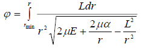
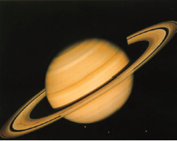

(11.6)
(11.6)
Аспан механикасының негізгі есебі Аспан механикасы - жасанды және табиғи аспан денелерінің қозғалыстарын зерттейтін механика бөлімі. Зерттеу объектісінің ерекшеліктеріне сәйкес өзіндік заңдары, принциптері және зерттеу әдістері бар. Аспан механикасының негізін - бүкіләлемдік тартылыс заңы және механика принциптері құрайды; зерттеу әдістемелері - математикалық әдістер.
Аспан денелерінің қозғалысын есептеуде үш сатыны бөліп алуға болады.
Механикалық схема таңдап алып, қозғалыс теңдеулерін құру.
Қозғалыс теңдеулерін шешу.
Табылған шешімдерді бақылаудан табылған мәліметтермен салыстыру
Механикалық схемалар қандай болуы мүмкін?: Бұл екі дене есебі (Күн - Қозғалыс теңдеулерінің шешімдері қате немесе өте жуық болуы мүмкін.
Қозғалыс параметрлері, - яғни орбитаның бастапқы элементтері, планета массалары- дұрыс анықталмауы мүмкін.
Механикалық схема дұрыс болмауы мүмкін, яғни үлкен ұйтқу туғызатын күштердің бәрі ескерілмеуі мүмкін.
Бұл себептердің бәрі де қатар әсер етуі мүмкін, бұл жағдайда қандай себептің басым болатынын анықтау қиын. Алғашқы екі себепті мойындамауға болмайды, бірақ олар үлкен қателіктерге ұрындырмайды. Үшінші себепті тексер-мек болып, ағылшын ғалымы Адамс пен француз ғалымы Леверье Уранның қозғалысына үлкен ұйтқу туғызатын бел-гісіз планетаның орнын есептеп тауып, бақылаушыларға бағыт көрсетіп береді. Неміс астрономы Галле сол планетаны есептелген орнынан жақын жерден тауып алды. Сонымен, аспан механикасында пайда болған дағдарыстың аяғы оның жеңісімен аяқталды. Жаңа планета Нептун ашылды. Плу-тон планетасының ашылу тарихы осыған ұқсас.
Сонымен аналитикалық қозғалыс теориялары дәлдіктің жоғарғы шегіне жеткен сияқты. Болашақ теориялардың дәлдігі бұдан да жоғары болуы тиіс. Сонымен бірге аналитикалық теориялардың кейбір кемшілігі түзетілуі қажет. Бұл – аналитикалық теориялардың бақылау мәліметтеріне шекті уақыт аралықтарында ғана сәйкес ке-луі.
Планеталармен бірге Жердің серігі Айдың қозғалысы да зерттеліп келді. Айдың алғашқы аналитикалық теорияларын жасаған ғалымдар Даламбер 1751ж., Клеро 1752ж., Эйлер 1753ж. болатын. XVIII ғасырдың аяғына де-йін ең дәл теория Лаплас теориясы болды. Оның дәлдігі 0΄,5. Бұдан да дәл теория, яғни бақылау дәлдігіне сәйкес келетін теория,- Ганзен теориясы болып табылатын. Бірақ бұл теорияның дәлдігі біртіндеп кеміп, Браун теориясымен алмасты. Браун теориясының да бақылаумен сәйкес болуы үшін Ньютон заңына қосылғыш болуы керек деп еске-ріп есептеп жүрді. Астрономдар бұл түзетудің қажеттігін талқылап, ізденіп жүріп маңызды жаңалыққа келеді: ас-пан денелерінің қозғалысын зерттегенде уақыт санаудың ерекше бірқалыпты жүйесі керек. Бұл жүйе эфемеридтік уақыт санау жүйесі болып табылады.
Кейінгі жылдары бақылау жасаудың орнына, қозғалыс теңдеулерін электронды есептеуіш машиналарда сандық жолмен шешіп, алынған мәліметтерді теориялық мәліметтермен салыстыру үшін пайдаланады. Бұның ыңғайлылығы сол – бақылауды жүргізу кейде қиындау болады, бақылаудың қателіктері көп болып кеткен кезде де салыстыру қиынға тиетін жағдайда, сандық шешімдер қолдануға ыңғайлырақ.
Аспан механикасының барлық әдістемелерін 3 топқа жіктеуге болады: аналитикалық әдістемелер; сандық әдістемелер және сапалық әдістемелер.
Аспан денелерінің қозғалыстарын зерттеу үшін аса күрделі теңдеулерді шешу керек. Бұдан кейін ас-пан денелерінің координаттарының немесе орбита элементтерінің уақыттан тәуелділік функцияларын анықтау керек. Барлық планеталар үшін:
х=х(t), z=у(t), z=z(t) функциялары белгілі болған жағдайда Күн жүйесі денелерінің орналасуын кез келген уақыт моменті үшін анықтауға болар еді. Есептің шешімі осындай функциялар түрінде алынатын болса, онда шешім аналитикалық түрінде табылған дейді. Планетаның қозғалыс теориясы аналитикалық теория деп атала-ды. Сонымен, аспан механикасында аспан денелерінің қозғалысының аналитикалық теориясы дегеніміз, ко ординаттардың немесе орбита элементтерінің уақыттан тәуелділігін білдіретін формулалар жүйесін айтады. Аспан денелерінің сипаттамалары бұл формулаларда әріп арқылы беріледі. Аналитикалық теорияның артықшылығы - ол кез-келген уақыт моментіндегі, айталық, миллион жыл-дан кейін немесе миллион жыл бұрын планетаның ор-наласуын табуға мүмкіндік береді. Бұл мақсатта орын-далатын операциялардың саны өте аз. Массаны және планетаның қозғалысының бастапқы шарттарын өзгертіп, сол аналитикалық теориядан жаңа шарттарға сәйкес планетаның орналасуының қалай өзгеретіндігін есептеп шығару оңай. Ал сандық әдістемелерді қолданар болсақ, бұл есепті ең басынан бастап, әрбір уақыт моменті үшін са-ты-сатылап, миллион жыл үшін шығару керек болады.
Аналитикалық теориядан бастапқы шарттар, планета массасы өзгергенде, қозғалыстың өзгеру сипатын анықтау оңай. Ал сандық теорияның көмегімен бұны анықтау үшін, бастапқы шарттар мен планета массасын өзгерте отырып, теңдеулердің сандық шешімін анықтап, содан шыққан әр түрлі сандық массивтерді мұқият салыстыра отырып, заңдылықтарды іздестіру керек.
Аналитикалық теория дәлдігі және эффективтігі жағынан жақсы теория болса, ешқандай сандық теорияны қажет етпейді. Дегенмен ЭЕМ-ның дамуы аналитикалық теорияларды құруды да жеңілдететін дәрежеге жетіп отыр. ЭЕМ-ның жадының күрт өсуі, есептеу шапшаңдығының жоғарылауы- формулалармен жұмыс істеуге мүмкіндік береді. Соның көмегімен Айдың, барлық планеталардың таза сандық- аналитикалық теориялары құрылды. Сандық аналитикалық теориялар белгілі аналитикалық теориялар-ды пайдаланып, планеталардың қозғалысын дәл есептеу-ге мүмкіндік береді. ЭЕМ-ның шамасы қазір әріптермен өрнектелген теорияларды құруға да мүмкіндік береді.
Сонымен, бұл формулалардың универсалдылығы да көрініп тұр. Кез- келген аспан денесінің сандық сипатта-маларын осы формулаларға қойғанда осы дененің кез-келген уақыт моментіндегі орналасуын анықтауға болады.
Бірақ өкінішке орай, аспан механикасында қолданы латын барлық механикалық схемаларды сипаттайтын теңдеулердің дәл аналитикалық шешімдерін қазір анықтау мүмкін емес. Бірақ қазір жуықтап шешудің эффективті әдістемелері бар. Олар жеткілікті дәлдікпен, қажетті ұзақ уақыт аралықтарында Күн жүйесі денелерінің орна-ласуын анықтауға мүмкіндік береді.
Аналитикалық зерттеу әдістемелері - денелердің қозғалысындағы ұйтқуларды есептеуді мақсат ететіндігі жоғарыда айтылған.
Астрономдар сандық есептеу әдістерін ерте заман-нан қолдана бастаған. Шынында да аспан шырақтарының көрінерлік орындары жайында бақылау мәліметтер жинақталған кезде, оларды сандық есептеулер арқылы теориялық мәліметтермен салыстыру қажет болады.
Сандық әдістемелер, электронды есептеуіш машина-лар пайда болмастан бұрын, аналитикалық әдістермен салыстырғанда әлдеқайда сирек қолданылды. Негізінен, бұрын бұл әдістемелердің көмегімен кейбір кометалардың және кейбір кіші планеталардың орбиталарын аз уақыт аралықтары үшін есептейтін. Бұлардың си- рек қолданылуының себебі: аспан механикасының есептерінде осы әдістемелерді қолданғанда миллиардтаған операцияны орындау керек, ал бұл операцияны электрон-ды- есептеуіш машинасыз атқару қиын. Бұл әдістемелерді қолдана бастаған - ағылшын астрономы Адамс (1819-1892) болатын. Оның әдісі осы уақытқа дейін қолданылып келеді және тек аспан механикасында ғана емес, соны-мен қатар басқа салаларда да қолданылады.
Сандық есептеулерді орындау барысында өзіндік қиындықтар пайда болады. Ең алдымен, есептеу нәтижесінің қателіктерін бағалау. Қателіктерді бағалауды астрономдар физиктерден бұрынырақ бастаған. Сандық әдістерді де шығарған аспан механикасының мамандары болатын. Аналитикалық әдістердің ыңғайсыз жағы: ас-пан денелерінің механикалық қозғалысының теңдеулерін жалпы түрде шешу- көпшілік жағдайда мүмкін болмайды. Сондықтан бұл теңдеулерді жуық түрде шешеді. Алғашқы сандық әдісті Эйлер, одан кейінгі ең белгілі әдістерді Адамс, Рунге және Кутт, Коуэлл және Кроммлин ұсынған болатын. Бұл әдістер әлі де жетілдіріліп дамып жатыр.
XX ғасырдың ортасына таман пайда болған ЭЕМ-лар бұл жұмысты автоматтандырып, жеңілдетті. Бірақ қазір ас-пан механикасының қоятын мәселелері ЭЕМ-ның қолдану шектеріне жақындап келеді, өйткені бақылау дәлдігі XX ғасырдың ортасына дейін керемет жоғарылап, есептеу дәлдігіне жақындап қалды. Лазерлік қондырғылар аспан денелеріне дейінгі қашықтықтарды өте дәл анықтауға мүмкіндік берді.Ал планетааралық қашықтықтарды дәл анықтау ғарыштық сапарларды іске асыру үшін керек. Лазер сәулесін аспан денелерінен шағылу үшін сол денелердің бетіне шағылдырушы қондырғылар орнату қажет. Сандық теориялар аз уақытқа болса да аналитикалық теориялардан дәлірек мәндерді есептеуге мүмкіндік берді. XX ғасырдың аяғына таман аналитикалық теориялардан да дәл мәлімет беретін, сонымен бірге ұзақ уақыт аралықтарына есептел-ген сандық теориялар да пайда болды. Бұл теорияларды құру үшін астрономдар мен математиктердің үлкен коллек-тивтері еңбек етті. Енді сандық теориялардың дәлдігін тек-серу үшін оның қорытындыларын бақылау мәліметтерімен емес, сандық есептеулерінің қортындыларымен салыстыру орын алып келе жатыр. Бұның тиімділігі сол азғана уақыт аралығына есептелген сандық теория аналитикалық те-ориялардан дәлірек болғанымен қатар, сандық есеп-теу эксперимент болып қарастырылады, яғни берілген механикалық схеманың негізінде құрылған аналитикалық теорияны тексеруге көмектеседі. Аспан денелерінің нақты қозғалысы қандай да механикалық схемаға сәйкес келмейді және схема негізінде құрылған аналитикалық теория қандай дәл болса да есептеулі қозғалыстан өзгеше нәтижеге кел-тіреді. Бірақ сандық әдістемелерінің кемшіліктері де жоқ емес. Бұл теориялар қандай да бір уақыт моменттеріндегі ас-пан денелерінің орналасуларын, орбитаның элементтерінің бастапқы мәндерімен байланысын көрсете алмайды.
Сандық есептеулер әдісінің негізгі идеясы: дененің қозғалысы кезінде, белгілі бір шекті уақыт аралығы ішін-де жүріп өткен жолды анықтау үшін,- оны ұсақ уақыт аралықтарына бөліп, әрбір ұсақ уақыт аралығында қозғалыс бірқалыпты үдемелі деп есептеп дененің координаттарын есептеп тауып, координаттарды тапқаннан кейін, денеге әсер күшін және үдеуін табады. Бұл табылған мәндер ке-лесі уақыт аралығының - “қадамның”- бастапқы мәндері деп алынып, сол қадамның аяғындағы координат, күш және үдеудің мәндерін есептеп шығаруға қолданылады, сөйтіп кез келген шекті уақыт аралықтарында дененің қозғалысын интегралдап шығуға болады. Бұл есептеулерде қадамдардың уақыт аралықтарын бірдей деп (“тұрақты қадам”), немесе өзгермелі етіп (“айнымалы қадам”) алуға болады. Бұндай әдіспен есептеу жуық шешімге келті-ретіні сөзсіз. Өйткені әрбір қадамда үдеу өзгермейді деп қабылдау – қате. Бірақ есептеу қадамын азайта бер-се, дәлдік жоғарылайды. Ал бұл есептеу жұмыстарын көбейткеннен басқа, жалпы қателікті де көбейтетіні анық (қадамдар саны көбейеді).
Сонымен, бір жағынан, белгілі бір шекті уақыт аралығында қадамдардың санын көбейту арқылы дәлдікті жоғарылатуға мүмкін болса, екінші жағынан, бұл жалпы қателікті өсіреді. Қадамды қандай етіп алу керек? Бұл сұраққа бірмәнді жауап жоқ, өйткені бәрі де қойылған мақсатқа, берілген дәлдікке және есептейтін уақыт аралықтарына байланысты. Мысалы: жасанды серіктердің орбиталарын есептеу үшін, есептеу қадамын бірнеше се- кунд етіп алады, ал үлкен планеталардың орбиталарын есептегенде 20- 40 тәулік алынады. Сандық есептеудің тағы бір кемістігі: қандай да уақыт моментіндегі аспан денесінің координаттарын есептегенде, оның алдындағы уақыт аралықтарындағы координаттарын есептеу қажет. Ал аналитикалық әдістемеде кез келген моменттегі дененің 138 орналасуын есептеу үшін, алдыңғы моменттегі орналасуын білу қажет емес. Осы жағынан аналитикалық әдістің артықшылығы бар. Сапалық әдістемелердің алдындағы әдістемелерден айырмашылығы: қозғалыстардың қандай да бір қасиеттерін анықтау үшін жалпы шешімін табуды қажет етпейді . Пуанкаре және Ляпунов қорытып шығарған сапалық әдістемелер жоғарғы математиканың аса күрделі бөлімдерінің қатарына кіреді. Аспан механикасының кей-бір сапалық мәселелерін шешкенде аналитикалық немесе сандық шешімдер пайдаланады. Бірақ сапалық әдістер ас-пан денелерінің координаттарын анықтауды мақсат ет-пейді. Сапалық әдістемені қолданғанда көздейтін мақсат: аспан денелерінің қозғалыстарының жалпы қасиеттерін зерттеу. «Күн жүйесінің үлкен уақыт аралықтарында эволюциясы қандай?»- деген сұраққа жауап іздейді. Күн жүйесі көптеген миллиард жыл бұрын қандай болды және сонша жыл кейін ыдырап кетпей ме? («Күн жүйесінің орнықтылығы мәселесі»). Планеталардың серіктер жүйесі қалай өзгереді? Миллион жыл бұрын Ай қалай қозғалды және миллион жылдан кейін ол қалай қозғалады?
Аспан механикасының жетістіктері
Сонымен, аспан механикасының теңдеулерін пайда ланып, негізгі екі есепті шешеді:
Тура есеп:
Өзара тартылу күштері белгілі болғанда, аспан денелерінің координаттарын немесе орбита элементтерін табу.
Кері есеп:
Аспан денелерінің қозғалысы анықталған болса, әсер ететін күштерді табу.
Астрономдар қазіргі заманда бірінші есептің жуық ше-шімін ғана тауып үйренді. Бұл шешім барлық планеталардың орындарын алдын ала есептеп табуға мүмкіндік береді.
Үлкен планеталардың қозғалыстарын анықтағанда қолданылатын механикалық схема: n – дене есебі. Яғни барлық планеталар – материалдық нүктелер деп қабылд анып, ал әрқайсысының қозғалыстары Кеплер заңдарына жуық түрде бағынады деп есептеледі, ал басқа планеталардың әсерлері ұйтқулар түрінде ескеріледі. Планетаға әсер ететін күшті қатарға жіктеп, қатардың мүшелерін есептеп табу-мен бірдей. Бұл есеп Леверье еңбектерінде дәл анықталған болатын. Ол коллегалармен жұмыла еңбек етіп, формуладағы 105 мүшені есептеп тапқан. Бұл мүшелерді тізіп жазу үшін 200 беттік кітап керек екен. Қозғалыс теңдеулерінің оң жағындағы мүшелерін анықтап болғаннан кейін Леверье, Ньюкомб және Хилл үлкен планеталардың элементтерінің ұйтқуларын анықтау. Бұл шешімдер өте дәл анықталады, бірақ шешімдерінің қолданылу мерзімі шектеулі. Бұл мер-зімді анықтау мүмкін емес. Аналитикалық теорияның қаншалықты сапалылығы бақылау мәліметтерімен салыстыру арқылы анықталады. Леверье, Ньюкомб және Хилл құрған теориясын әлі бір-екі ғасыр бойына пайдала-ну мүмкін. Ал одан үлкен уақыт аралықтарына қолдануға бола ма, жоқ па - болашақ көрсетеді. Осы нәтижелерді авторлар таблица түрінде бастырып шығарған. Онда ұйтқулардың коэффициенттерінің формулалары, әртүрлі планеталар үшін осы коэффициенттердің мәндері беріл-ген. Қазір осы таблицалардың негізінде жыл сайын пла-неталар мен серіктердің аспандағы орнын көрсететін астрономиялық жылнамалар бастырылып шығарылады. Аспан механикасының теңдеулеріне массалар да кіре-ді, сондықтан теория массаларды анықтауды қажет ете-ді. Қозғалыс теориясы мейлінше дәл болуы үшін масса-лар да мейлінше дәл анықталуы тиіс. Жақсы құрылған аналитикалық теориялар планеталардың Күнді айкалу периодтарын дәл анықтауға мүмкіндік береді. Ал Кеплердің үшінші заңының көмегімен периодтар массаларды дәл анықтауға мүмкіндік береді. Леверье, Ньюкомб және Хилл сонымен қазір де маңызын жоғалтпаған. Қазір ғалымдар осы жұмыстарды жалғастыруда. Олар планеталардың бадан да дәл теорияларын шығару үшін еңбек етіп жүр.
Аспан механикасының аса күрделі есептерінің бірі – Айдың теориясын құруы. Күрделі болуының себебі:
Ай қозғалысын дәл анықтау зерттеудегі басты мақсат емес, оның практикалық тұрғыдан да маңызы бар: Жер бетінде кемелерге дұрыс бағдар беру, Жердің өз осінен айналмалы қозғалысын зерттеу және т. б. мақсаттар үшін керек. Ай теориясын шығару жөнінде көп еңбек сіңірген Хилл мен Браун. Бұл жөнінде көп тарихи мәліметтер келтірілген.
Күн жүйесіндегі қозғалыстарды зерттеуде тағы бір маңызды мәселе: планеталардың серіктер жүйелерін зерт-теу. Серіктер жүйесі Күн жүйесіне ұқсайды. Олай болса планеталардың қозғалыс теориялары, әдістемелері серіктер жүйесінде қолданылуы мүмкін. Бірақ ерекшеліктері де жоқ емес. Біріншісі: планеталарды бұл жағдайда материалдық нүкте деп есептеуге болмайды, себебі планеталардың сығылуы жақын қашықтықтарда білінеді. Екіншісі: Күннің, басқа планеталардың, басқа серіктердің ұйтқуларын ескеру қажет.
Күн жүйесіндегі астероид пен кометалардың қоз ғалыстарының теорияларын жасау мүмкін болмай отыр. Өйткені, бұлардың қозғалыстарында ұйтқулар көп. Кіші планета- астероидтің қозғалысын есептегенде негізінен үлкен планеталардың ұйтқуларын анықтау керек. Қазір тіркелген астероидтардың саны 4000. Астероидтың ұйтқыланбаған траекториясының параметрлерін 3 қалпы ның координаттарын өлшеу арқылы анықтайды. Оны есептеудің әдісін Гаусс көрсеткен болатын. Осы әдіспен қатар аспан механикасының теориясында шектелген үш дене есебі де қолданылады.
Астероидтардың жеке траекторияларын есептеген-нен басқа, астрономдар астероидтар белдеуін тұтасымен де зерттейді. Күннен өлшегенде кейбір қашықтықтарда (3а.б.,3,1а.б.,4а.б.) астериодтардың орбиталары жиі кез-деседі, ал кейбірінде сирек, тіпті жоқтың қасы. Соңғы аймақтарды – Кирквуд люктері деп атайды. Бұл мәселені зерттеу Күн жүйесінің эволюциясы мәселелері бойынша мәлімет беруі мүмкін.
Кометалардың қозғалысын зерттеу осы күні, негізі-нен, сандық әдіспен атқарылады. Бұның себебі кометалар басқа аспан денесінен масса жағынан өте кем, ал қозғалысы кезінде үлкен планеталарға өте жақын өтеді. Бұлар коме-та қозғалысында күшті ұйтқу туғызады. Күшті ұйтқулы қозғалыстар теориясы әлі жоқ.
Аспан механикасының зерттейтін бір қозғалыстар тобы – аспан денелерінің айналмалы қозғалыстары. Қазір Күн жүйесінде Плутоннан басқа барлық планеталардың айналмалы қозғалыстары зерттелінді. Айналу осьтері кеңістіктегі бағытын өзгертпейді, айналу кезеңдері тұрақты болып келеді.
Планеталар сфералық пішінді болмағандықтан, яғни полюстер бағытында сығылғандықтан, планеталар мен Күннің, және планеталар мен серіктерінің өзара тартылуы планеталардың айналмалы қозғалыстарына әсерін тигізеді. Осы әсердің салдарынан айналу осьтерін кеңістікте бұруға бағытталған күш моменттері пайда болуы тиіс. Осы се-бепті прецессия және нутация құбылыстары пайда болуы тиіс. Бұл құбылыс Жер үшін зерттелді. Серіктің тартылыс күштерінің нәтижесінде планеталардың айналу жиіліктері де азаюы тиіс. Жер үшін бұл құбылыс та анықталды. Бұның себебі: тасулардың кешігуі деп көрсетілген.
Сапалық аспан механикасының нәтижелері:
Аналитикалық және сандық әдістемелердің көмегі мен планеталардың, серіктерінің, кіші планеталар мен кометалардың ондаған, жүздеген жылдар бұрын қалай қозғалғанын немесе сонша жылдан кейін қалай қозғалатындығын анықтауға болады. Ал миллиард жыл бұрын Күн жүйесі қандай болды немесе миллиард жылдан кейін қандай болады деген мәселе тек сапалық әдістемелер-дің көмегімен зерттеледі. Сапалық әдістемелер Лаплас пен Лагранж еңбектерінен басталып, зерттелінді. Бұл мәселенің шешуі 3 дене есебінің қозғалыс теңдеулерінде ғасырлық ұйтқулардың болуы не болмау мәселесіне тіреледі. Қазір бұндай мүшелердің болатыны анық. Бірақ олардың шамасы өте аз. Осы мәселеге үндесетін тағы бір маңызды мәселе:
Күн жүйесінің орнықтылығының мәселесі: Күн жүйесінің осы құрылымы бұзылмай енді қанша уақыт қозғалады.
Күн жүйесінің орнықтылығы жайында Дубошиннің мақалаларынан оқып танысуға болады [32,(3-28б),33,(123-137б)]. Күн жүйесінің болашағы жөніндегі мәселе таза механикалық мәселе емес, өйткені мұнда электрлік, магниттік, термодинамикалық процесстер де маңызды роль атқарады. Бірақ бұл мәселенің механикалық сипатты жақтары да бар. Солардың бірі: Күн жүйесіндегі аспан денелерінің траекторияларын ұзақ уақыт аралықтарына (көптеген миллион жыл) есептеуге мүмкіндік бар ма? Мүмкін болса болашақта планеталар бір-бірімен соқтығысып, не ажырап кете ме? Кеңістікке сейіліп кете ме, әлде керісінше, бәрі Күн бетіне құлап тына ма? Бұл мәселенің күрделілігі сол, планетаға әсер ететін күштердің ішінде барлығын да, тіпті шамалыларын да ескеру қажет. Өйткені әлсіз күш ұзақ уақыт аралығында әсер етіп елеулі өзгерістерге келтіруі мүмкін.
Күн жүйесінің орнықтылығы жайындағы мәселені 1773 жылы Лаплас баяндаған екен. Бұл жұмысында ғасырлық ұйтқуларды зерттей отырып, Күн жүйесінің орнықтылығы жайында теоремасын дәлелдеген болатын. Бірнеше жылдан кейін Лагранж оның дәлелдеулерін толықтырды.
Сапалық аспан денесінің зерттейтін тағы бір қызық мәселесі: қармау және алмасу есептері:
Екі дене жүйесіне үшінші дене жақындап келе жатыр. Жақындасқаннан кейін бұл дене ұшып шығып кете ме, әлде сол жүйеде қала ма? (Қалғанды қармап алды дейді). Немесе бұл дене қалып, есесіне жүйенің басқа денесі шығып кете ме? (Бұл мүмкіндікті алмасу деп атайды) Бұл мәселе 4- не-месе 5- денелер есебінде де қарастырылуы мүмкін. Мысалы: О.Ю. Шмидтің Күн жүйесінің пайда болуы жөніндегі гипотезасы Күннің өтіп бара жатқан ұсақ бөлшектер бұлтын қармау мәселесімен байланысты.
Сапалық мәселелердің біразы планеталардың және планета серіктерінің пайда болуымен және қозғалысымен байланысты. Соның бірі астероид орбиталарының кеңіс тіктегі орналасуының біртексіздігімен байланысты. Бұлардың жиі орналасқан аймақтар мен сирек орналасқан аймақтары (бостықтар) кезекпе- кезек орналасқан. Бұлардың орналасуындағы реттілік, заңдылықтар Юпи тердің орташа тәуліктік қозғалысымен байланысы бар сияқты. Бостықтардың басым көпшілігі астероид пен Юпитердің орташа тәуліктік қозғалыстарының өлшемдес болған кеңістік аймақтарында байқалады. Бұл жағдайларда, қозғалыстарының өлшемдес болған жағдайларында, Юпитердің ұйтқулары артып кетеді деп есептеуге болады. Кіші планеталардың үлкен жарты остерінің ғасырлық ұйтқулары пайда болуы мүмкін. Сондықтан Юпитердің және басқа планеталардың ұзақ әсер етуінің нәтижесінде люктер пайда болады. Онда бұл өлшемдестіктің басқа да салдары болуы тиіс. Ғасырлық ұйтқулар пайда болуы мүмкін болмаса, онда люктердің пайда болуы, және кіші планеталардың қозғалысында пайда болатын басқа да ерек-шеліктер, күн жүйесі пайда болғаннан бері бар.
Қай көзқарастың дұрыс екенін кесіп айтатындай мәлімет жоқ. Сапалық зерттеулердің қамтитын тағы бір мәселесі: ас-пан денелерінің массалары өзгеріссіз қалады деген көзқарас дұрыс болмайтын шығар. Эволюция процестері кезінде ас-пан денелерінің массалары өзгереді. Ал массасы айнымалы денелердің орбита элементтері де өзгеріп тұрады. Бұл мәселелерді зерттеу енді-енді басталып келе жатыр.
Планеталардың жақын серіктерінің (Айдың, Марс серіктерінің және т.б.) қозғалыстарына тасулардың әсерінің қандай болатындығы жөніндегі мәселе аяғына дейін зерт-телген жоқ. Тасу үйкелісі ұзақ уақыт аралықтарында Күн жүйесіндегі қозғалыстарға елерліктей әсер етуі мүмкін.
Америка ғалымы Себехей: „ІІІ-мыңжылдықтың табал дырығындағы аспан механикасының ашық мәселелері” – атты мақаласында аспан механикасының өткені және болашағы жөнінде мынадай пікір білдірді: „Аспан механикасы қысқаша уақыт аралығында болжам жасау үшін интегралданбайтын және трансцендентті теңдеулерге сүйенеді. Болжамның дәлдігі әртүрлі факторларға тәуелді: айталық маңызды сандық есептеулер компьютерлік техниканың дамуындағы жетістіктермен байланысты. Ас-пан механикасының алғашқы ғылыми нәтижелерін Нью-тон шығарды. Аналитика тұрғысынан қуатты серпін 17-ғасырда болды (Эйлер, Лаплас, Лагранж, Гаусс), ал 18-ғасырда- аспан механикасының сапалық әдістемелерінің дамуы (Гамильтон, Хилл, Якоби, Пуанкаре, Тиссеран) қуатты болды. Аспан механикасының келешектегі дамуы өзара байланысқан 3 бағыт бойынша болатындығы анық: аналитикалық, сандық есептеулер және бақылау әдістерінің жетілдірілуі. Аналитикада ықтималдық әдістемелері басым болады, айталық орбиталардың орнықтылығы және хаосы теориясы, периодты орбиталар теориясы. Плане-талар ұйтқуларын есептеу дәлдігінің, релятивистік және гравитациялық емес эффектілерді ескеріп, планеталардың эфемеридаларын анықтау дәлдігінің жоғарылауы. Әсіресе көңіл аударатын мәселе: болашақта астероидпен соқтығысу қаупін алдан-ала болжап, болдырмаудың техникалық мүмкіншіліктерін ойлап шығару. Болашақта космостық ұшулар жиі және тұрақты болуымен байланысты, оларды атқару әдістемелері де жеңілдеуі тиіс.” (Selectial Mech. and Dynamical Astron.-1996-1997,-65,№1-2.-р.205-211)
Астрономия қазіргі ғылымның фундаментін қалаған ғылымдардың пайда болуы мен дамуында маңызды роль атқарды [45]. Сондай ғылымның алғашқысы механика болып табылады.
Коперниктің Жердің өз осінен айналуы жөніндегі ойларында инерция заңы мен импульстың сақталу заңы жайында интуициялық түсініктері болған. Денелерді тарту қасиеті Жерге ғана емес, басқа денелерге де тән деп есепте-ді. Аристотелден Галилейге дейінгі ғалымдар инерциялық қозғалыс тек аспан денелеріне ғана тән, яғни шеңбер бойымен бірқалыпты қозғалысты инерциялық деп есеп-теген. Кеплер – инерциялық қозғалыс түзу сызықты және бірқалыпты болады, ал аспан денелерінің эллипс бойымен қозғалысы Күннің күштік әсерінен болады деп есептеген. Тарту күшін Кеплер жан –жаққа таралып жатқан жарық ағынындай көреді. Сол себепті болар ол жарық сәулесі интенсивтігінің қашықтықпен өзгеру мәселесін зерттеп, осы бағытта біраз жаңалық табады [45]. Ньютон да осы көзқарасты ұстанып ауырлық күші қашықтық өскен сайын-жарықталыну сияқты заңдылықпен, яғни дененің Жер центрінен қашықтығының квадратына кері пропорционал болатындай кемуі керек деп есептеген [38].
Екі дене есебі классикалық механика, кванттық ме-ханика салаларында белгілі, шешімі анықталған есеп. Астрономиялық тұрғыдан бұл есептің мағынасы: тартылыс күшінің әсерінен материалдық нүктенің қозғалысы жайындағы есеп. Бұл есепті шешу үшін қозғалыс теңдеулерін интегралдау қажет. Материалдық нүктенің орталық денеге тартылыс күші Ньютонның бүкіләлемдік тартылыс заңынан анықталады:
Тартылыс күштерінің әсерінен материалдық нүктенің қозғалысы Кеплердің үш заңының көмегімен жақсы сипатталады. Ал Ньютонның бүкіләлемдік тартылыс заңын қалай қорытуға болады?
Кеплердің үш заңының ашылуы Коперниктің Әлемдік жүйесіне жақсы фундамент құрса да, планеталардың тұйық орбита бойымен қозғалысының себебі анық болмады. Бұл мәселе бойынша өз ойларын Галилей де, Кеплер де, басқа ғалымдар да айтып кетті. Галилейдің аспан денелерінің қозғалысының себептеріне көзқарасы дұрыс емес болатын. Ол планеталардың шеңбер бойымен бірқалыпты қозғалысын инерциямен қозғалуы деп түсіндірген. Ке-плер планеталардың шеңбер бойымен қозғалысын Күннің өзі өріс күшімен планеталарды орбита бойымен итер-мелеп тұруынан деп түсіндіреді. Борелли (1666 жылы) планеталардың тарту күші мен центрден тепкіш әсерінің теңбе-тең болуы мүмкіндігі жөнінде болжам айтты. Көріп отырсыздар, шындыққа жақындағаны – соңғы көзқарас болатын. Бұл идея, және одан кейінгілері де ғылыми жағынан дәлелденген жоқ. Бұл мәселені математикалық әдістермен толық шешкен Ньютон болды. Ньютонның бүкіл әлемдік тартылыс заңын ашылу тарихы [11,38] кітаптарында бар. Кеплердің және Галилейдің бұл мәселеге көзқарасымен таныстырып, Ньютонның жаңалығының қалай пайда болғанымен таныстырады.
Кеплердің 3 заңына сүйеніп, Ньютон барлық дене-лер бір-біріне тартылатындығын көрсетті. Айды орбита-да ұстап тұратын күш пен Жер бетіндегі ауырлық күшінің табиғаты бір деп болжам жасап, ол Айдың қозғалысын зерттейді және ол үшін ауырлық күші үдеуін есептеп шығарады.
(Ай центрінің Жер центрінен қашықтығы Жер радиусынан 60 есе артық болатындықтан.) Жер бетін-де g=9,8 м/c2, Жер радиусы 6370 км. Айдың Жер центрі-нен қашықтығы 384000 км, Ай орбитасындай қашықтықта еркін түсу үдеуі: (384000)2/(6370)2=3640 есе азаюы тиіс, 9,8 м/с2-ты 3640 – қа бөліп табатынымыз аай =0,00270 м/с2. Бұл Жердің тарту күшінің әсерінен пайда болатын Айдың үдеуі. Ньютон центрден тепкіш күштердің үдеуін есептеп шығарды: w =υ2/r
Тексеріп көрейік: Айдың орбиталық жылдамдығы: υ=(2πr) / T , мұндағы Т – Aйдың орбита бойымен айналу кезені. Т=27,32 тәулік; v= 1,02 км/с; w=0,00271 м/с2; Көріп отырғанымыздай 2 үдеу тең: аай = w. Сондықтан бұдан шығатын қорытынды: Жер бетіндегі үдеудің мен Айдың қозғалысын туғызатын үдеудің себебі бір- Жердің денелер-ді тарту күші болып табылады.
Осыған сүйеніп, Ньютон Айдың Жерді айналғанда, ал Жердің және басқа планеталардың Күнді айналғанда әсер ететін күштің аналитикалық түрін табуды мақсат етеді. Бір планетаның Күнді айнала қозғалысын қарастырайық. Кинетикалық энергияның өзгерісі жайындағы теорема бойынша, бұл планета үшін:
(11.1)
Мұнда m,υ- планетаның массасы және жылдамдығы, r – оның Күннен қашықтығы, F- планетаның Күнге тарту күші. Планета жазық траектория бойымен қозғалғандықтан, осы жазықтықта полярлық координат жүйесін енгізген ыңғайлы
Онда:
Осы екі шаманы (11.2) теңдеуге, немесе (11.1)- ке қояйық
дифференциалдап, қысқартып, бұл теңдеуден шығаратынымыз:
Бұл- планетаға әсер ететін күш. Эллипстің ауданы S=p аb болғандықтан:
болады; ал аналитикалық геометриядан - эллипстің параметрі:
болатындығы белгілі және сондықтан
Осы формулаларды (11.3)–ке қойып, табатынымыз.:
Мұндағы f = 4p2a көбейткіші барлық планеталар үшін бірдей (бұл Кеплердің 3-заңынан шығады). (11.4) теңдеуден көрінетіні планетаның Күнге тарту күші планетаның массасына тура пропорционал, ал Күннен қашықтығының квадратына кері пропорционал. Бұл - Күн тарапынан планетаға әсер ететін күш. Планета тарапынан Күнге шама жағынан дәл сондай, бағыты жағынан қарама-қарсы күш әсер етеді деп болжам айтуға болар еді. Бұл күш Күн массасына тура пропорционал, ал Күннен қашықтығының квадратына кері пропорционал болуы тиіс.
Μ - Күн массасы. Сонымен, Ньютонның үшінші заңы бойынша: |F|=|F’|. (11.4) және (11.5) теңдеулерден: 2 күшті теңестіріп табатынымыз:
Сонымен, Күн мен дененің бір- біріне тартатын күші:
(11.6)
Ньютон тартылыс күші мен ауырлық күштің бір-біріне сәйкес екендігін көрсеткеннен кейін, мынадай қорытындыға келеді:
2 материалдық дененің тартылу күші олардың массаларының көбейтіндісіне пропорционал және ара қашықтықтарының квадратына кері пропорцио-нал.
Бұл тұжырым бүкіләлемдік тартылыс заңы деп аталады.
Осыдан астрономияда қолданылатын екі дене есебінің анықтамасын келтіре кетейік:
Екі дене есебі- бір-бірімен ньютондық тартылыс күшімен әсерлесетін екі дененің қозғалысы жайындағы есеп.
Екі дене есебі классикалық механиканың көп қолданылатын, әрі шешімін тапқан есебінің бірі.
Бүкіл әлемдік тартылыс заңын ашқаннан кейін Ньютон кері есепті де шешті. Ол бүкіл әлемдік тартылыс заңына сүйеніп Кеплер заңдарын қайта қорытып шығарды. Осы еңбектің нәтижесінде Кеплердің бірінші заңы бұрынғыдан да жалпы күйінде, үшінші заң – бұрынғыдан да дәлірек күйінде алынды. Ньютон осы есепті шешкенде екі дене есебін, яғни Күн мен планетаның әсерлесуі және қозғалуы жайындағы есепті қарастырған.
Қандай да бір планетаның қозғалыс теңдеуін құрайық. Күн қозғалмайды деп есептегенде (11.6) теңдеуге сәйкес тартылыс күшінің планетаға беретін үдеуі
Екінші жағынан планета да Күнді сондай күшпен тартып, беретін үдеуі: Планетаның Күнмен салыстырғандағы үдеуін табу үшін 2 үдеуді бір бірінен алып тастау керек(12.1)
бұл үдеу 2 денені қосатын түзудің бойымен бағытталған.Сондықтан
 (12.2)
(12.2)
Екі дене есебі, классикалық механикада көрсетілгендей, бір дене есебіне келтіріледі. Бұл дененің массасы:
(12.3)
бұл дене орталық-симметриялы U(r) өрісінде қозғалады. Бұл қозғалыста энергия сақталу заңы орындалады:
(12.4)
Импульс моментінің сақталу заңы:
(12.5)
түрінде жазылады. Осы теңдеулерді шешіп, әрбір дененің қозғалыс заңдарын табуға болады.
Ең алдымен айтарымыз, орталық симметриялы өрісте толық импульс моменті сақталады: L = const. Екінші жағынан (12.6) өйткені бұл жағдайда - аралас көбейтіндіде параллель екі вектор көбейтіледі, ал бұндай көбейтінді әрқашан нөлге тең. Сондықтан (12.6) теңдеуді
(12.7)
түрінде жазып, Lx, Ly, Lz – тұрақты шамалар екенін 153 ескерсек, онда (12.7)- теңдеу: ах+bу+cz=0 жазықтық теңдеуі болып шығады. Яғни траекторияның барлық нүктелері сол жазықтықта жатады деп айтуға болады. Траекторияның теңдеуін қорыту үшін, осы жазықтықта полярлық (үйектік) координат жүйесін енгізу керек.
(12.8)
(12.9)
Осы координат жүйесінде энергия мен импульстің сақталу заңын жазып шешейік. Бұл (12.9) шамаларды (12.4),( 12.5) формулаларға қойып табатынымыз:
 (12.10)
(12.10)
(12.11)
Классикалық механикада секторлық жылдамдық ұғымы қарастырылады. Бұл траекторияның радиус- векторы сызған сектор ауданының өзгеру жылдамдығы:
(үшбұрыштың ауданы)
Сонымен импульстың сақталуы – секторлық жылдамдықтың тұрақтылығын білдіреді. Ал бұдан шығатын қорытынды:
Бірдей уақыт аралықтарында материалдық нүктенің (планетаның) радиус-векторы бірдей аудандар сызады:
Ал бұл Кеплердің екінші заңы болып табылады. Полярлық координат жүйесінде:
(12.13)
Импульстың сақталу заңынан: (12.14) ал энергия сақталу заңынан (12.10):
(12.15)
табамыз, өйткені (12.10) формуладан, (12.4) қойғанда
(12.16)
шығады. Осындағы соңғы екі мүше радиус- вектордың функциялары болғандықтан, біріктіріліп, эффективті потенциалдық энергия деп аталады:
(12.17)
Сонымен, (12.14), (12.15) формулалардан траектория теңдеуін табамыз:
(12.18)
Планета гравитациялық өрісте қозғалады, оның потенциалдық энергиясы:
(12.19)
онда толық энергия: (12.20)
немесе (12.21)
Онда траектория теңдеуі нақтылана түседі:
 (12.22)
Айнымалыларды алмастырайық: χ = 1/r Оны (12.22) теңдеуге қойған кезде:
(12.23)
Бұдан табатынымыз:
(12.24)
Мұндағы: р- фокустік параметр, ал ε - эксцентриситет:
(12.25)
Осыдан траектория теңдеуі
(12.26)
Бұл теңдеу полярлық координат жүйесіндегі екінші ретті конустық қиманың теңдеуі деп аталады. Конустық қима 4-түрлі: шеңбер, эллипс, парабола және гипербола. Демек, осыдан шығатын қорытынды:
Гравитациялық тартылыс өрісінде дене тек эллипстік траекториямен ғана емес, ε- эксцентриситеттің мәніне байланысты, парабола немесе гипербола бойымен де қозғалуы мүмкін.
Бұл ереже Кеплердің 1-заңының жалпылама түрі деп аталады. Ал (12.26)-теңдеу осы қисықтардың фокустық теңдеуі деп аталады. Фокустық аталатын себебі: координат жүйесінің төбесі қисықтардың фокусының бірінде орналасады.
Бірақ аспан денесінің қандай траекториямен қозғалатыны ε-нің мәніне, яғни L,E тұрақтылардың мәндеріне байланысты. Ал бұл тұрақтылардың мәндері бастапқы шарттарға тәуелді. Осыдан шығатын қорытынды:
Дененің қандай траекториямен қозғалатындығы бастапқы шарттарға (v0,r0) байланысты:
а)болса, онда (12.20) теңдеуге сәйкес E=0, ал (12.25) теңдеуден ε=1; онда дене параболалық траекториямен қозғалады. Сондықтан параболалық жылдамдық деп аталады.Сонымен, (12.26) теңдеудің қамтитын қозғалыс түрлері Кеплердің бірінші заңындағыдан көбірек. Гравитациялық тартылыс күшінің әсерінен дене шеңбер немесе эллипстік
19-сурет. Аспан денелерінің троекториялары турлері
(12.27)
Жоғарыдағы (12.26) теңдеудегі параметрдің мәнін пайдалансақ: C = pα 1 осыдан
(12.28)
Сондықтан(12.29)
Бұл теңдеу Кеплердің үшінші заңының мағынасын дәлірек жеткізеді, (12.29)-ші теңдеу Кеплер үшінші заңының жалпылама түрі болып табылады. Кеплердің үшінші заңы 1-тарауда §8-де бақылау нәтижесі түрінде берілген. Бірақ (12.29) теңдеу бұған қарағанда теориялық жолмен алынған теңдеу. Онымен салыстырғанда (8.4) формадағы теңдеу Күн жүйесі планеталары үшін ғана жазылғандығы көрініп тұр. Шынында да (12.29) теңдеуде m - планета массасы, ал M- Күн массасы болса, онда m «M болатындықтан Күн жүйесіндегі планеталар үшін
Сонымен, (12.29) теңдеудің артықшылығы, бұл теңдеу Күн мен планета жүйесі үшін ғана емес, кез келген денелер жұбы үшін жарай береді. Ал ондай жүйе мысалдары: қос жұлдыз жүйесі; планета мен оның серігі, астероидтардың кейбір жұптары және т.с.с.. Сондықтан, (12.29) теңдеу универсалды болып келеді, яғни қолданылу аумағы кеңірек болады.
Сонымен Ньютонның бүкіләлемдік тартылыс заңына сүйеніп, Кеплердің үш заңының жалпылама түрін қалайша қорытып шығаратындығын көрсеттік.
Жоғарыда табылған р мен ε–нің мәндерін (8.1), (8.3) формулаларындағы мәндерімен салыстырып, табатынымыз:
Тұрақтылардың мәндерін анықтайық:
немесе
Осыдан кейін (12.21) формуладағы С2-нің мәнін табуға болады. С1–дің табылған мәнін ε- нің формуласына қойсақ:бұдан
бұны (12.21) формуласына қойып, табатынымыз:
(12.30)
Бұл аспан денесінің қозғалысындағы энергияның сақталу заңының басқа түрі; бұны “жанды күштер интегралы” (“Интеграл живых сил”) деп те атайды. Сонымен бірге формула: “вириал туралы теорема”-сының (§27) мағынасына сәйкес келеді. Осы формуладан, (8.4), (8.5) формулаларын пайдаланып, перигелийдегі және афелийдегі жылдамдықтарды анықтайық:
 (12.31)
(12.31)
(12.32)
Мұндағы - дөнгелектік жылдамдық.
Ньютонның бүкіләлемдік тартылыс заңының негізінде қорытылған Кеплер заңдары астрономияда көп қолданыс тауып, астрономдардың сенімді құралына айналды.
Сонымен өткен параграфта Ньютонның бүкіләлемдік тартылыс заңына сүйеніп, екі дене есебінің шешімін таптық. Осы шешімге сүйеніп, аспан денелерінің масса- ларын анықтауға болатындығын көрсетейік. Жалпы Күн жүйесі планеталарының массаларын анықтау үшін 3 әдіс қолданылады:
1. Аспан денесінің массасын бетіндегі гравиметриялық өлшеулер арқылы анықтау.
Мысалы: Жер бетінде кез келген дененің салмағы
(13.1)
М±–Жер массасы, R±–Жер радиусы m – Жер бетіндегі кез келген дененің массасы
Бұл теңдеуден еркін түсу үдеуі:
 (13.2)
(13.2)
g - шамасын басқа әдістермен, айталық, маятниктің кезенің өлшеу арқылы анықтауға болады. Жер радиусын градустық өлшеулер арқылы анықтайды. Содан кейін (13.2) формуладан Жер массасын анықтау қиын емес.
(13.3)
Жер массасы m⊕ = 5.976·1024кг≈6·1024кг
Басқа аспан денесіне адам баласы аяқ аттап басқан кез- де, осы әдісті пайдалануына болады
2. Серігі бар аспан денелерінің массаларын Кеплердің үшінші заңының дәл формуласын (12.29) қолдану арқылы анықтау.
Кеплердің үшінші заңы бойынша:
Осы теңдеуді мына түрге келтіруге болады.
M/m -нің шамасы өте үлкен, ал mc/m шамасы кейбір планеталар және олардың серіктері үшін өте кіші, оны ескермеуге болады. Теңдеудің оң жағындағы шамалар өлшенетін шамалар. Оларды өлшеп, M/m қатынасын анықтауға болады. Мысалы: Юпитер үшін M/m = 1050, M⊗/m⊗ ал Жер үшін M⊗/m⊗ = 333000 .
Бірақ Жермен салыстырғанда Ай массасы үлкендеу, оны ескермеуге болмайды. Жер массасын анықтау үшін Ай массасын алдын ала табу керек. Ай массасын анықтау қиын есеп болып табылады. Бірақ Айдың тарту күшінің әсерінен Жер центрі шағын болса да эллипстік траекториямен қозғалуы тиіс, бір айда ортақ массалар центрін бір айналып шығуы керек, бұл өзгерістерді байқау үшін басқа аспан денесінің координаттарын үздіксіз өлшей отырып, сондай кезеңін болатын өзгерістерді іздеу қажет. Күн центрінің көрнекі орындарын ұзақ уақыт бойы дәл анықтап отырса, оның бойлығында айлық кезеңпен бір өзгерістер байқалған. Бұл өзгерістер “Ай теңсіздігі” деп аталған екен. Бұл өзгерістердің себебі: Жер центрінің шынында да Жер- Ай жүйесінің ортақ массалар центрін айнала эллипстік траекториямен қозғалуы болып шықты. (§15-ті қара)
Бұл массалар центрі Жер центрінен 4650 км қашықтықта, Жер қабығының астында екен. Осы шаманы анықтағаннан кейін Жер мен Ай массаларының қатынасы анықталды.
Жер мен Айдың массасының қатынасы 1930-31 жылы Эрос кіші планетасының қозғалысын бақылау арқылы дәлірек анықталған. Кейін Жердің жасанды серіктерінің қозғалыстары арқылы да табылды. Айдың жасанды серіктерінің қозғалысы бойынша Ай массасы анықталғанда, соңғы қатынасқа сәйкес келді (1966). Сонымен бұл қатынас 1/81,3 -ке тең болып шықты.
Сонымен осы қатынасты пайдаланып екендігі табылып, Күн массасы M⊗ = 2 ⋅1030 кг болып шықты.
Күн массасын біле отырып, серігі бар басқа планеталардың да массасын анықтауға болады. Жер мен Ай тәрізді, Плутон мен Харон массалары бір-біріне жақын. Сондықтан бұларды қосарлы планета деп атайды.
3. Серіктері жоқ планеталардың массаларын, олардың басқа аспан денелерінің қозғалысына түсірген әсері бойынша анықтайды.
Мысалы: Меркурий мен Шолпанның массасын анықтау үшін, осы денелердің басқа денелердің кеңістік қозғалысына ұйтқу әсері зерттелді. Бұл денелерге Жердің, Марстың, кейбір кіші планеталардың және Энке-Баклунд кометасының қозғалысына тигізетін ұйтқытушы әсерлері бойынша массалары анықталды.
Күн жүйесі деп Күн және оны айнала қозғалатын материалдық денелерден және олардың арасындағы шаң - тозаңнан, газдан құралған үлкен жүйені айтады.
Күнді айнала эллипстік траекториялармен үлкен, сфералық пішінді, үлкендігі Жермен шамалас, тіпті одан да үлкен 9 планета қозғалады деп есептеліп келді. Бұлардың атаулары: (Күннен алыстаған ретімен) Меркурий, Шолпан, 163 Марс, Юпитер, Сатурн, Уран, Нептун және Плутон. Сатурннан кейінгі планеталар Коперник ілімі орныққаннан кейін ашылды. Соңғысы Плутон - жақында, 1930 жылы ғана ашылды. Қазір кейбір астрономдардың – Плутонның орбитасының сыртында 10-шы планета болуы мүмкін деген болжамы бар болатын. Бірақ бұл аспан денесі осы уақытқа дейін табылмай келді.
Бұл аспан денелері кейінгі кезге дейін – үлкен планеталар деп аталып келді. Бұлардың пішіндері айналу эллипсоидтарына жақын, олар өзіндік айналу осі бойындағы диаметрі бойымен сығылған. Ең үлкені – Юпитер, диаметрі Жердікінен 11,2 есе үлкен. Сатурн, Уран, Нептун да үлкен денелер. Өлшемдері жағынан Жерге ең жақыны Шолпан, ал планеталардың ең кішісі – Меркурий. Планеталар масса бойынша да бір-біріне ұқсамайды. Ең үлкен масса – Юпитерде, ал ең кішісі – Меркурийде. Барлық планеталардың массалары Күн массасымен салыстырғанда өте аз, Күн массасының 0,31%-ін құрайды (қосымшаны қараңыз).
Күн жүйесіне кіретін денелердің біразы планеталарды айнала қозғалады. Бұл – планета серіктері деп аталатын үлкенді-кішілі денелер. Жердің серігі – Ай. Марстың серіктері – Фобос және Деймос. Юпитер, Сатурн, Уран мен Нептунның серіктері орасан көп. Серіктердің, сақиналардың ашылуы тарихын [11]-тан оқып танысуға болады. Марс серігінің екеуі де ірі тас кесек пішінді, өлшемдері өте кіші (25км, 13,5км). Бұлардың көрінерлік қозғалыстары қызық. Орбиталары шеңберге жуық. Фобос өз перицентрінде Марс бетіне өте жақын келеді (4000 км). Оның орбитамен айналу жылдамдығы (7h 39m 14s ) планетаның өз өсінен айналу жылдамдығынан 24h 37m 23s жоғары. Сондықтан Марстың бір тәулігі өткенше Фобос Марсты үш айналып шығады, батыстан шығып, шығыстан батады. Марстан қарағанда ең үлкен өлшемі Айдан сәл кіші. Деймостың айналу 164 жылдамдығы 30h 17m 55s , ол шығыстан шығып, батысқа батады. Фобос пен Деймос планетаға өте жақын қозғалады. Юпитер серіктерінің ішінде Галилей ашқан серіктер
Юпитер серіктерінің ішінде Галилей ашқан серіктер бар. Бұлар: Ио, Еуропа, Ганимед және Каллисто. Бұлардың Юпитерді айналу жылдамдықтары өте тез. Мысалы: Гани- мед 7 тәулікте бір айналым жасайды. Амальтеяның Юпи- терден қашықтығы Айдың орбиталық радиусынан 2 есе кіші, бірақ айналу периоды 12 сағатқа жуық. Бұның себебі - Юпитердің тартылысының күштілігінде.
Бірақ галилейлік серіктердің басты ерекшелігі: олардың орбиталары – шеңбер. Бұл шеңберлер Юпитердің эква- тор жазықтығында жатады, екіншіден, осы орбиталар- мен қозғалыстары резонансты сипатта болатыны. Егер Т1, Т2, Т3, Т 3 – айналыс кезеңдері болса,
Осы резонансты қозғалыс 370 жылдай уақытта әлі өзгере қойған жоқ.
Юпитер серіктерінің жетеуінің диаметрлері 30-40 км- ден аспайды, екеуі 70-80 км, үшеуінің диаметрлері: 100 ÷ 300 км аралығында, төрт серіктің диаметрлері: 3000 ÷ 5000 км.
Юпитердің басқа серіктері өте жақын және өте алыс қашықтықта айналады және 3 топ болып қозғалады. Үш серік Амальтеямен бірге бір топ құрайды; бұлар-серіктердің ішінде ең жақындары: 100-200 мың км қашықтықта, айналу кезеңдері 7 сағ ÷ 16 сағат, 4 серігі - бір топ, планетадан 11 млн км қашықтықта, айналу периодтары- 230 ÷ 260 тәулік, келесі 4 серігі - 2-топ: кезеңдері 21-22 млн. км қашықтықта, айналу кезеңдері 630 ÷ 760 тәулік, орбиталары созылыңқы эллипс ( e = 0.13 ÷ 0.378 ). Көлбеулік бұрыштары да үлкен i = 25° ÷ 35° . Үшінші топтағы 4 серік кері бағытта айнала- ды.
Сатурнның 5 ең үлкен серігі XVII ғасырда табыл- ды: Тефия, Диона, Рея, Титан (2800км), Япет. XVII-XIX ғасырларда - 4 серік, 1966 жылы – Янус ашылды, ал 1980 жылы планетааралық станциялар тағы 7 серікті табады.
Сатурн серіктері – 17. Ішіндегі ең үлкені Титан, негізгі серіктері планетаны шеңбер бойымен экваторлық жазықтықта айналады. Ең жеңілдері және ең жақындары- 12 серік: планетадан 137 мың км-ден 377 км-ге дейінгі қашықтықтарда айналады. Ірілері (3) - алысырақ айналатын 5 серіктің ішінде 1,2 млн. км-ден -12 млн. км-ге дейін.
Уранның да серіктері сондай ерекшелік байқатады, 10 серігі – жақын, планетадан 49-86 мың км. Ал қалған 5 серік планетадан 129-582 мың км қашықтықта, диаметрлері де ірілеу.
Нептунның 8 серігі бар. Бұлардың ішінде екеуі бұрыннан белгілі: Тритон және Нереида. Тритон 1846 жылы табылды, бұл өте ірі серік, айналысы кері бағытта. Нереида 1949-жылы, ал қалған серіктері бертін келе, 1989- жылы ғана табылды.
Күн жүйесінде бұрыннан бері бақыланып келген объектілердің бір түрі: планета сақиналары. XVII ғ.ғ. Сатурнның сақинасын Х.Гюйгенс байқаған. Бұлар өлшемдері бірнеше см-ден 1 км-ге дейін ұсақ бөлшектерден құралатындығы кейін белгілі болды. Сақиналардың бірі өлшемі 20-30 км ірілеу денелерден құралған, яғни серіктердей. Сақина тәрізді жүйелер 1977- 86 жылдары Юпитер мен Уранның маңында табылды [11]. Әсіресе кейінгі жылдары бақылау дәлдігінің 166 жоғарылауына байланысты, ғарыштық аппараттарды қолдану нәтижесінде белгілі серіктердің саны орасан көбейді. [4,(1968)] –да ұзын саны: 31 көрсетілген болса, [8,1983]-де: 43 (1+2+15+17+5+2+1), Дагаевтың астр- да[9,1983]-да: 44 (1+2+16+17+5+2+1), [33,2002г]-де – 60 (1+2+16+17+15+8+1). Жақша ішіндегі сандар - Жерден бастап Плутонға дейін әрбір планетаның белгілі серіктерінің санын білдіреді. Серіктерінің пішіні шар тәрізді. Өлшемдері жағынан ең ірілері - Юпитер серіктері: Ганимед, диаметрі- 5262км, Каллисто - 4800км, Сатурн серігі: Титан -5150км.
Алып планеталардың маңында өте ұсақ бөлшектер де қозғалады. Бұлардың өлшемдері метрден аспайды. Бұл денелер бір жазықтықта орналасып сақиналар болып көрінеді. Сақиналардың арасында саңылаулар байқалады. Мысалы, Сатурн сақиналарында Кассини саңылауы бұрыннан белгілі. (Қосымшаны қараңыз)
Үлкен ғаламшарлар мен серіктерінен басқа күн жүйесінің құрамында кіші ғаламшарлар немесе астероидтар бар. Астероидтардың ашылу тарихы детективті әңгімедегі желіске ұқсайды. Иоганн Тициус және Боде 1772 жылы планета орбиталардың үлкен жарты осьтері сан мәні жағынан бір заңдылыққа бағынатындығын анықтаған. Бұл заңдылық:
an= (0,3·2n+0,4) а.б.
Қазіргі заманда Тициус-Боде заңдылығының нақты мәндермен қалай үйлесетіндігін төменгі таблица көрсетеді: Бұл кезде Нептун мен Плутон белгісіз болатын. Сондықтан Тициус - Боде заңдылығы шындыққа өте жақын бо- лып көрінген. Бірақ Марс пен Юпитер аралығында бір планетаның орны бос тұрған сияқты болды. Сол кезде белгілі болған планеталардың ешқайсысының сипаттамала- ры бұл орынға сәйкес келмеді. Осы планетаны таппақшы болып іздеу де салынды. Кездейсоқ Пиацци аспаннан осын- дай аспан денесін тапқандай болды. Бірақ кейін Ольберс
| планета | n | Күннен қашықтығы (астрономиялық бірлік өлшемімен) | |
|---|---|---|---|
| Тициус–Боде заңы | Нақты мәні (а.б.) | ||
| Меркурий | -∞ | 0.4 | 0,39 |
| Шолпан | 0 | 0,7 | 0,71 |
| Жер | 1 | 1,0 | 1,00 |
| Марс | 2 | 1,6 | 1,52 |
| Астероидтар | 3 | 2,8 | 2,8 |
| Юпитер | 4 | 5,2 | 5,2 |
| Сатурн | 5 | 10,0 | 9,54 |
| Уран | 6 | 19,6 | 19,2 |
| Нептун | 7 | 38,8 | 30,1 |
| Плутон | 8 | 77,2 | 39,4 |
Астероидтардың (Церерадан басқасының) массалары плане-талар мен серіктерінің массаларынан әлдеқайда кіші. Белдеудің ішіндегі орбиталардың басым бөлігі өте орнықты, Күн жүйесі пайда болғаннан бері өзгермей келеді. Ал белдеудің сыртындағы астероидтар өмірі қысқа, үлкен планеталар гравитациялық өрістерімен оларды қармап 169 алады немесе басқа орбитаға көшіріп жібереді. Осының нәтижесінде олар бір-бірімен соқтығысып ұсақ кесекке бөлінеді, метеорлық денелер пайда болады. Астероидтар белдеуінің ішінде кейбір қашықтықтарда астероидтар жоқтың қасы. Астероид орбиталары кездеспейтін зоналарды Кирквуд люктері деп атайды. Кирквуд астероидтардың периодтарының ішінде кездеспейтіндерін Юпитердің айналыс периодымен салыстырып, олардың қатынастары: 3/1, 5/2, 7/3, 2/1 болатынын анықтады. Ал 2/3 қатынасқа сәйкес қашықтықта астероидтар болғанымен, оған дейін және одан кейін бос зоналар болып тұр. Юпитердің периодты әсерімен резонансқа түсіп, осы орбиталардан астероидтар кететін болып тұр.
Жаңа ашылған астероидтарға нөмір береді, ал кейбіреулеріне атау тағайындайды. Астероидтардың атаулары алғашында грек-рим мифологиясының кейіпкерлерінің аттарымен берілсе, кейін алуан түрлі атаулар берілетін болды. Әйел аттары, белгілі адамдардың аттары (көзі тірісінде берілмейді), жер атаулары және т.с.с.. Бұл – ашқан адамның құзырында, бірақ оны ХАО (Халықаралық астрономдар одағы) бекітеді. Қазақстанмен байланысты 6 астероид аталыпты: Казахстания (№2178, ашылған жылы- 1972), Целина (№2111, 1969), Сәтпаев (№2402, 1979), Байқоңыр (№2700, 1976), Пацаев (ғарышкер, №1791, 1967), Тихов (№2251, 1977), Фесенков (№2286, 1977), Рожковский (№3986,1985) (қазақстандық астрономдар). Басқа мемлекеттердің көпшілігінің атаулары әлі берілген жоқ.
1977 жылы ең алғашқы мұз астероид табылып, оған “Ясон” деген атау тағайындалды (R=600км, Т=- 230ºС). Бұл ең үлкен астероид. Юпитер мен Сатурнның орбиталарының арасындағы астероидтар белдеуін Кентаврлер аймағы деп атайды. Қазір Нептун мен Плутон ғаламшарларының арасында 360 мұз астероиды табылған.Плутон ғаламшарының орбитасының сыртынан да кейінгі кезде сондай, тіпті онан да үлкен денелер де табылып тұр. Мысалы: 2003UВ313 объектісі (Қазір оған «Эрида» деп ат қойды). Ондай объектілердің бәрін «Нептуннан тыс объектілер» (ТНО) деп атап кетті. Бұл аймақ Койпер белдеуі деп аталады. (39 а.б.-тен 60 а.б.-ке дейін.)
Халықаралық Астрономиялық Одақтың 2006-жылдың тамызында болған XXVI сессиясында аспан денелері классификациясына өзгеріс енгізді. Енді ғаламшар (планета) есебінен Плутон-Харон жүйесін бөліп алып, оған жаңа атау: «ергежейлі планета» тағайындады. Бұл топқа астероидтардың ішінен өлшемдері ең жақын Церераны қосты. Басқа астероидтарға «кіші планета» емес, Күн жүйесінің кіші денелері деген ортақ атау берді. Ал «планета» дегеніміз не? «Планета» атану үшін аспан денесі 3 шартты қанағаттандыруы тиіс:
«Ергежейлі планета» - алдыңғы екі шартты ғана қанағаттандырады.
Ольберс гипотезасы бойынша астероидтар ертеде жарылып кеткен планетаның бытыраған қалдықтары болуы мүмкін деген. Оны “Фаэтон” деп атаған. Жарылысты туғызуы мүмкін себептерінің ішінде Юпитердің ұйтқу әсері айтылады.
Қазір астрономдар астероидтардың пайда болуы Күн жүйесінің пайда болуымен үйлесе болған шығар деген пікірді ұстанады. Астероидтардың жалпы саны 30-70 мың болар деген болжам бар, бәрін қосқанда жалпы радиусы 1450 км шар құрайды, жалпы массасы Күн массасының 0,001 бөлігіндей [20] болуы мүмкін. Астероидтардың негізгі сипаттамалары Қосымшада келтірілген. Өлшемдері 1 км – ден кіші астероидтарды метеороид деп атайды.
Күн жүйесінде планета мен астероидтардан басқа кішкене денелердің шоғырлары кездеседі. Олар шаң мен тозаңнан құралған қабықшамен қоршалған. Бұл дене Күнге жақындағанда оның маңында үлкен құйрық пайда болады. Комета атауы соны білдіреді. ( Кометес – құйрықты немесе шашты-түкті жұлдыз). Кометалар эллипстік траекториялармен қозғалып, Күн маңында жақындаған кезде ғана көрінеді. Жылына Күн маңында 4-6 комета бақыланады. Күннен алыс аймақтарда комета көрінбейді. Астероидтар мен кометалардың қозғалыс ерекшеліктері және табиғаты, зерттеу тарихы жөнінен Ф.Ю.Зигельдің [16] Е.А.Гребеников пен Ю.А.Рябовтың [24] және А.Н.Симоненконың [26] кітаптарынан тереңірек оқуға болады.
Күн жүйесі кеңістігінде пішіні дұрыс емес басқа да көптеген дене бар. Олардың кейбіреулерінің өлшемдерінің кішкентайлығы соншама, оларды бақылауға мүмкін болмайды. Бұл денелер Жермен соқтығысқан кезінде, атмосферада жарқырап жанып өтіп, аспанда аққан жұлдыз болып көрінеді.
Бұндай ұсақ денелердің бұлты бұрынғы кометалардың траекториялары бойынан табылатыны бар.Метеорлық денелердің өлшемі метрлер шамалас болса, олар Жер атмосферасында жанып үлгірмей, жер бетіне түседі. Ұшып бара жатқанда бұларды болид деп атайды. Ал жер бетіне түскен қалдықтарын метеорит деп атайды. Жер бетіне түскен метеориттердің ішіндегі ең үлкендері: Сихоте-Алинь метеориті, Гоба метеориті (60 тонна).
Қазір астрономдар басқа жұлдыздардың маңынан ғаламшарларды іздеп жүр. Оларды “Экзопланеталар” деп атайды. 2006 жылдың ортасына дейін 200-ге тарта сондай дене табылды. Көбісі Юпитер тәрізді үлкен денелер. Бұндай зерттеуді жүргізгенде бірнеше мақсат көздейді:
Сонымен, ғаламшарларды және басқа аспан денелерінің қозғалыстарында зерттеуді күткен мәселелер әлі көп. Осы қозғалыстарды зерттеуде қандай қиындықтар бар?
Күн жүйесіндегі денелердің қозғалысы жайында есеп қандай болады? Күн жүйесіндегі денелердің бәріде бір- біріне Ньютон заңына сәйкес күшпен тартылады деп есеп- теп, белгілі бір бастапқы моментте олардың орындары және жылдамдықтары белгілі болса, математикалық әдіспен олардың қозғалысын зерттеу болып табылады.
Бірақ есепті бұндай жалпы күйде қоюдың қажеті жоқ. Яғни барлық денелердің бір-біріне әсерін ескерудің қажеті 173 болмайтын шығар. Мысалы, кометалар мен астероидтардың массалары планета массаларымен салыстырғанда өте аз. Сондықтан Күнге және планеталарға беретін үдеулері де мардымсыз аз. Планеталар мен олардың серіктерінің қозғалысына кометалардың тіпті өте жақын өткеннің өзінде елеулі әсерін тигізетіндігі әлі байқалған жоқ. Осы- дан кометаның массасы, ең көп дегенде, Жер массасынан миллион есе аз екендігін білдіреді. Ең үлкен астероидтың массалары, жуықтап алғанда, Жер массасынан мыңдаған тіпті миллиондаған есе аз. Барлығын қосып есептегенде Жер массасының 1/700-ден артпайтындығы белгілі. Со- нымен планеталар мен серіктердің қозғалыстарын астеро- идтар мен кометалардың қозғалысынан бөлек қарастыруға болады дегеніміз.
Екіншіден, серіктердің массалары да планета массала- рынан көп кіші, тек Жер-Ай және Плутон-Харон жүйелері үшін ғана серіктің планетаға әсерін ескеру қажет.
Сонымен, планеталардың, астероидтардың, серіктердің және кометалардың қозғалыстарын біртұтас етіп қарастырғанан гөрі, әрқайсысын бөлек зерттеген ыңғайлы.
Планеталардың қозғалысын зерттегенде, олардың бір- біріне әсері және Күннің әсері ескеріледі. Яғни бұл есеп 10 дене есебі болып табылады. Серіктердің қозғалыстарын қарастырғанда планетаның тартылысы - негізгі күш, ал басқа серіктердің әсері, Күннің және басқа планеталардың ұйтқу туғызады деп қабылдау керек.
Астероидтар мен кометалардың қозғалыстарын зерт- теген кезде, бұл қозғалыстарға Күн мен планеталар әсер етеді деп есептеу қажет. Бірақ сонда да біз екі дене емес, бірнеше дене есебін қарастыруға мәжбүрміз. Ал бұл есеп өте қиын, әлі толық шешілмеген. Юпитердің ұйтқу әсерінен астероидтардың қозғалғанда Якоби интегралы деп аталатын шама өз мәнін өзгертпейді. 1923 жылы Хира- яма осы интегралдың мәніне қарай астероидтар 5 дененің 174 қиратылуы нәтижесінде пайда болды деп болжам жасады. Әрбір денені құраған топты астероидтар үйірі деп атаған. Мысалы: Флора астероидының үйіріне 57 кіші плане- та кіреді екен. Кейінгі зерттеулер бұл үйірлердің саны 12 немесе тіпті 30 болуы мүмкін екендігін көрсетті. Әртүрлі үйірге жатқызылған астероидтардың орбиталарының бір- бірінен айырмашылығы көп.
Көп дене есебін жалпы түрде толық шешу дегеніміз, бұл денелердің массалары және бастапқы қалыптары мен жылдамдықтары қандай болғанына қарамастан олардың қозғалыстарының қасиеттерін тауып, орындарын есептеу- ге мүмкіндік беретін формулаларды табу. Бұның себебі – қозғалыстардың күрделілігінде болып тұр. Ең жеңіл деген 3 дене есебінің мысалдарын қарастырайық.
Айталық, Күн, Юпитер және кометаның қозғалысын зерттеген болайық. Бұндай есепті 3 дененің шектелген есебі дейді. Шектелгендігі: кометаның Күннің және Юпитердің қозғалыстарына әсерін ескермеуге болады. Комета Юпитер- ден алыс қозғалғанда Юпитерге тартылуы шамалы болып, Күнге қатысты эллипстік траекториямен қозғалады делік. Юпитерге жақындаған кезде, оның әсерінен орбитасын өзгертіп, басқа орбитаға ауысып керуі мүмкін бұл орбита параболалық немесе гиперболалық немесе эллипстік болуы мүмкін. Бұл сол денелердің бастапқы жылдамдықтарына және жақындасуына байланысты. Сол орбита - эллипс бол- сын делік. Соның бойымен қозғала отырып, Юпитермен кездескен нүктесіне қайтып келеді делік. Бірақ Юпитер бұл нүктеден кетіп қалады, немесе болашақта бұлардың кезеңдері өлшемдес болып қалған жағдайда тағы да кездесіп қалуы мүмкін. Сонда тағы да ұйтқудың әсерінен кометаның орбитасы өзгеріп, жаңа орбитаға ауысады (эллипстік, параболалық немесе гиперболалық) Сонда мына мәселеге назар аударайық. Бірінші кездесудің шарттарында аздаған өзгеріс болса, соның нәтижесінде кометаның ауысқан жаңа 175 орбитасының параметрлері өте көп өзгеріске ұшырауы мүмкін, ал бұның екінші кездесуге әсері көп. Ал екінші траектория эллипс болса, үшінші кездесу де болуы мүмкін. Бұндай қозғалыстарды ескеретін жалпы формула өте күрделі болуы тиіс, өйткені бастапқы шарттардың аздаған өзгерістерінен кейінгі қозғалыстардың үлкен өзгерістері сәйкес келеді.
Аспан денелерінің қозғалысының аналитикалық теориялары
Аспан механикасында аспан денелерінің қозғалыс теориясын құру деп сәйкес дифференциалдық қозғалыс теңдеулерінің шешімдерін тауып, соның негізінде аспан денелерінің кеңістікте теориялық орындарын есептеуге қозғалыстарының әртүрлі қасиеттерін зерттеуге және т.б. мүмкіндік беретін формулаларды құрауды айтады.
Аналитикалық қозғалыс теорияларын құруды алғашқы сатысы қозғалыс теңдеулерін құру. Бұл үшін қозғалыстың механикалық схемасын таңдау, механикалық схема дегеніміз аспан денелерінің тартылыс күштерінің әсерлесуінің сүлбасы.
Күн жүйесі денелерінің қозғалысы жайындағы есепті құрғанда ең дәл механикалық схема: Күн жүйесіндегі барлық денелердің Ньютон заңы бойын- ша тартылыс күштерінің әсерінін қозғалады. Бұған қоса планеталардың сфералық пішіндері болмауының, планеталардың айналуының және т.б. әсерлерден пай- да болатын күштерді ескеру қажет. Бұндай сұлба күрделі оның бәрін толық ескеру мүмкін емсе. Сұлбаны жеңілдету керек. Бірақ планеталардың, серіктердің, астероидтардың, кометалардың, кішкене метеорлық денелердің әсерлері бірдей емес. Бұларды жеке-жеке ескеруге болады. Ең ал- дымен, Күннің әсері планеталардың бір-біріне әсерінен әлдеқайда күшті болатындығын ескеру керек.
Барлық ғаламшарлардың қозғалу траекториясы эллипс болып табылады. Эллипстің бір фокусінде Күн орналасқан болып шығады. Эллипстің эксцентриситеті өте аз шама. Ең үлкені е=0,25- Плутон орбитасына тән, яғни кіші жар- ты осі үлкен жарты осінің 97%-ін құрайды. Сонымен, ғаламшарлардың орбиталары шеңберлерге жуық.
Ғаламшар серіктерінің қозғалу теориясы ғаламшарлардың қозғалу теориялардан өзгешелеу. Күн жүйесінде ғаламшарлардың қозғалыстарын зерттегенде, оларды материалдық нүкте деп есептеуге болады. Ал серіктердің қозғалыстары ғаламшарлардың маңында болғандықтан ғаламшарларды материалдық нүкте деп есептеуге бол- майтынын жоғарыда айттық. Серіктердің орбиталары да эксцентриситеті кіші эллипс болып келеді. Орбиталарының өлшемі ғаламшар орбитасына қатысты алғанда өте кіші шама болып табылады. Басқа үлкен денелердің әсері, яғни ұйтқуды есептеуге тура келеді. Ұйтқу факторларын 4 топқа бөледі. Біріншіден, - орталық ғаламшардың пішінімен бай- ланысты ұйтқулар(сығылуына байланысты); екіншіден -Күн тарапынан ұйтқулар; үшіншіден - сол планетаның басқа серіктері тарапынан ұйтқулар; төртіншіден - басқа планеталар тарапынан ұйтқулар. Бұл ұйтқулар Ай үшін ғана ескерілуі мүмкін. Басқа серіктер үшін бұл ұйтқулар бақылау дәлдігінен көп кіші. Көптеген жағдайда алғашқы екі топтағы ұйтқуларды, ал кейбір серіктер үшін басқа серіктердің ұйтқуларын ескеруге тура келеді. Мысалы: Са- турн серігі Титанның басқа серіктерге ұйтқу әсері күшті. Ал Юпитер серіктерінің ішінде Еуропа, Ганимед және Каллисто күшті ұйтқулар туғызады.
Ғаламшарлардың орбиталарының сипаттайтын бірнеше шаманы атап өтейік. Бұлар орбитаның сыртқы пішінін, эклиптикаға салыстырғандағы орналасуын сипаттайды. Бұл шамалар: a, e, i, Ω, ω және t0. Мұндағы а – орбитаның үлкен жарты осі, е – эксцентриситеті, і – орбита жазықтығының 177 эклиптика жазықтығымен жасайтын бұрышы (орбита көлбеулігі деп аталады). Осы екі жазықтықтың қиылысу сызығы түйіндер сызығы деп аталады, ал орбитаның эклиптикамен қиылысу нүктелері түйіндер деп аталады. Ғаламшардың оңтүстік жарты шардан солтүстікке өткен түйіні шарықтау түйіні арқылы өтеді Ω, ал екіншісі – құлдырау түйіні J деп аталады. Х-осі – көктемгі күн мен түн теңесу нүктесі g арқылы жіберілсе (l=0), у-осін - l =900 бағытымен, ал эклиптиканың солтүстік полюсына – z-осін жіберейік.Онда түйіннің g нүктесінен қашықтығы шарықтау түйінін ің бойлығы деп аталады, Ω деп белгіленеді 0÷ 3600 бойлықтар өсетін жаққа, яғни Күннің жылдық қозғалысы жағына қарай бағытталған. Орбитаның сол жазықтықта ор- наласуын перигелийдің түйінінен қашықтығымен (w) си- паттайды, және планетаның қозғалу бағытында өлшейді. Планетаның орбитадағы орнын: перигелийге және денеге жүргізілген бағыттардың арасындағы бұрышпен не болмаса планетаның перигелийден өту уақыт моментімен t0 сипаттайды. Планеталардың ішінде көлбеулігі ерекше үлкені – Плутондкі (і=17018),
20-сурет. Аспан денесінің орбита элементтері
Гаусс үш бақылау арқылы планета орбитасын анықтау мүмкіндігін дәлелдеген болатын. Барлығы алты орбита элементі бар: і,Ω, a, е, ω, Т. Бұларды Делонэ элементтері деп атайды. Астероидті бір бақылағанда оның аспандағы бұрыштық координаттары анықталады. Осы координат- тарды орбита элементтерімен байланыстыратын 3 теңдеу құруға болады. Бірақ бұл теңдеулерге бір белгісіз кіреді- Планетаның Жерден қашықтығы. Олай болса, бір бақылау 7 белгісізі бар үш теңдеуді анықтайды. Екінші бақылағанда теңдеулерге тағы бір белгісіз пайда болады: планетаның Жерден жаңа қашықтығы. Сонымен, барлығы 6 теңдеу – 8 белгісіз. Ал үшінші бақылаудың нәтижесінде 9 теңдеу - 9 белгісіз болады. Бұл жүйенің жалғыз шешімі болу керек. Га- усс әдісінің негізгі идеясы осы. Гаусс әдісімен анықталған орбита нағыз орбитаға алғашқы жуықтау болып табыла- ды. Онда басқа планеталардың ұйтқулары ескерілмейді. Осы орбитаны жақсарту үшін барлық басқа планеталардың ұйтқулары ескерілуі тиіс.
Серіктердің орбиталарының жазықтықтары өз планеталарының экватор жазықтықтарымен сәйкес келеді. Айналу бағыты планеталардың Күнді айналу бағытымен сәйкес келеді. Серіктердің көбісінің орбиталарының жазықтықтары планетасының экваторлық жазықтығымен беттеседі. Кейбір серіктер планеталарын теріс бағытта ай- налады.
Кіші планета (немесе астероидтің ) аспандағы қозғалысы жақсы байқалады. Оларды тіркеу үшін арасы бірнеше тәулік болатындай 3 нүктесінен көру керек. Бірақ өлшемінің кішілігінен, жалтырауының кемдігінен бір рет көрінген асте- роид енді қайтара көрінбеуі мүмкін Мысалы, 1911 жылдан 179 1930 жылға дейін 1962 кіші планета байқалған, бірақ соның тек 480-нде ғана орбиталары анықталды, яғни солар ғана тіркелді. Бұл мәселенің қиындығы сол астероидқа дейінгі қашықтық белгісіз болғандықтан, үш қалыптың бұрыштық координатасы бойынша траекторияны анықтау қажет бо- лады. Ұйтқысыз траекторияны есептеумен қоса теория шектелген үш дене есебін де қолданады. Астероидтардың траекторияларының көбісінде Юпитердің ұйтқуларын ескеруге, ал Жерге және басқа планетаға жақындап келген астероидтардың ұйтқуларын зерттеу осы планеталардың массаларын анықтауға мүмкіндік беретіндігін (§13) білген жөн.
Астероидтердің орбиталары үлкен планеталардың орбиталарындай болады. Орбита жазықтықтарының эклиптика жазықтығына көлбеулігі шамалы, ал орбиталары шеңберге жақын. Бірақ, кейбір астероидтардың орбита жазық- тықтары эклиптика жазықтығымен 900-қа жуық бұрыш жа- сайды, ал кейбірінің, мысалы Икар, Адонис, Эрос, орбита эксцентриситеті өте жоғары, яғни орбиталары созылыңқы эллипс болып табылады, және Жер орбитасына өте жақын келеді. Кометалардың орбиталарын анықтау қиын, өйткені олар Күнге жақындағанда ғана көріне бастайды. Барлық кометалардың 50%-нің орбиталары эллипс тәрізді, қалғандары параболалыққа жақын неме180 се гиперболалық болып табылады, яғни орбиталарының эксцентриситеттері көбісінікі 0,9 пен1,03-тің аралығында. Кейбір эллипстік орбитамен қозғалатын кометалардың Күннен 40000 а.б. қашықтыққа ұзайтыны болжанып отыр (яғни Плутонмен салыстырғанда Күннен 1000 есе алысқа кетеді). ([7],73-74 б) Бірнеше комета Юпитердің, Сатурннің әсерінен орбиталарын өзгертіп отырады. Сол себепті Күн маңында да байқалып жүрген кометалар кенеттен жоғалып кетеді, яғни гиперболалық орбитамен Күн жүйесін тастап кететін болу керек.
Ал, кейбірі сыртқы аймақтан тартылып көріне бастайды. Астроном Оорттың пікірінше, Күн жүйесінің сыртқы аймақтарын кометалық ядролардың алып бұлты басып жатыр. Алып планеталардың тарту күштерінің әсерінен осы бұлттың ішінен әлсін- әлсін денелер жұлынып алынып, өте созылыңқы траекторияға аударылады. Соның арқасында Күн маңында жаңа комета көріне бастайды. Кері процесстер де болып тұрады. Кейбір кометалар алып планеталардың әсерінен сыртқы кометалық ядролар бұлтына (Оорт бұлты) тебіліп шығарылуы мүмкін. Кейбіреулері Күн сәулелерінің әсерінен затынан айрылып ыдырап, ұсақтау денелердің тобырына айналып, сол орбита бойымен қозғала береді, немесе алып планеталардың бірінің бетіне түседі. Мысалы, Шумейкер-Леви кометасы 20 шақты кесекке бөлініп, Юпитер бетіне түскендігін бақылау мүмкін болды. (суретте). Кейбірінің орнында шаң-тозаң ағыны ғана қалады. Жер орбита бойымен осындай бұлтты басып өтсе, Жер бетіндегі бақылаушылар аспаннан метеорлық жауынның болғанын байқайды.
Күн жүйесінің құрамына кіретін денелер саны көп болғандықтан 2 дене есебін қарастыру бұл жағдайда өте жуық шешімдерді береді.
Күн жүйесі денелерінің қозғалысын дәлірек есептеу үшін басқа денелердің әсерін ескеріп, ұйтқулар теориясын қолдану керек. Ұйтқулар теориясының негізгі есебі: Күн жүйесінің барлық денелерінің өзара әсерлерін есептеу болып табылады. Осы теорияны дамыту нәтижесінде аспан механикасы пайда болды.
Аспан механикасының негізін қалағандар: Леонард Эйлер, француз ғалымы Клеро – Ай қозғалысының теориясын дамытты; Лагранж – планеталардың ұйтқу теориясын жасаған және Лаплас – аспан механикасы саласында біраз еңбегі бар. “Аспан механикасы” деп аталатын трактат жазған. Бұл еңбегінде осы саладағы барлық еңбектерді қорытындылап жазды. Аспан механикасының дамуына көп еңбек сіңірген француз математиктері болған. XVIII-XIX ғасырларда аспан механикасының ерекше дамуына 2 себеп болды:
Айдың дәл теориясын қорыту қажет болды, - саяхат- шылар географиялық координаттарды анықтау үшін Айды бақылайтын еді.
Бүкіл әлемдік тартылыс заңының дұрыстығын тексеру қажет болды.
1 себепті былай түсіндіруге болады: Жер бетінде- гі орынның географиялық координаттарын табу үшін ол орынның жергілікті уақыт пен Гринвич уақытының айырмасын табу керек. Жергілікті уақытты Күн мен 182 жұлдыздардың қозғалысынан анықтауға болатын. Ал ашық теңізде жүзе отырып, Гринвич уақытын қалай анықтауға болады? Қазір Гринвич уақытын радиодан естіп білеміз. Радиодан бұрын XIX ғасырда теңізшілер хронометр деп аталатын жоғары сапалы сағаттарды пайдаланған. Бұндай хронометрлерді өзімен бірге сапарға алып жүретін. Ал XVIII ғасырда радио да, хронометрлер де болмаған кезде, Гринвич уақытын Айдың қозғалысы бойынша анықтаған. Айды бұл мақсатта сағат тілі етіп пайдаланатын, өйткені айдың жұлдыздарға қатысты қозғалысы өте жылдам (1сағатта -30’ жол жүретін).Сонда жұлдызды аспан ци- ферблат болса, ай - сағат тілі болады. Енді бұл циферблатты белгілеу керек. Бұл үшін айдың қозғалыс теориясының не- гізінде жасалған таблицаларды пайдаланады. Таблицалар Гринвич уақытының белгілі бір мезеттерінде Айдың орнын көрсетеді. Бұл таблицалар мейлінше дәл болуы керек. Айдың аспандағы орнын анықтауда 15 қателік болса, онда жер бетіндегі орнының анықталу дәлдігі 30 км болады. Ай қозғалысына ұйтқулар өте күшті әсер етеді, сондықтан айдың дәл теориясын құру қиынға түседі. Қазіргі уақытта бойлықты анықтау үшін басқа да дәл әдістер бар. Күн тұтылулары мезгілдерін, тұтылу ұзақтықтарын, тұтылу байқалатын аймақтың шекараларын анықтау үшін де айдың қозғалысының дәл теориясы керек. 2 себепке келсек, кезін- де Ньютонның бүкіл әлемдік заңының дұрыстығына күмән туғызатындай жағдайлар болған. Бірақ мұқият зерттеудің нәтижесінде бұл күмәнді жағдайларға есептеу әдістеріндегі қателіктер себеп болғандығы анықталды. Ньютонның заңы планеталар қозғалысын қажетті дәлдікпен сипаттауға мүмкіндік береді. Бұл жөнінде Бронштэн [28] кітабында айтылады.
Аспан денелерінің ішінде Жерге ең жақын орналасқаны – Ай. Сондықтан Айдың массасы Жерден көп кіші болса да, Айдың Жерге динамикалық әсер күші елеулі шама болып табылады. 2 дене есебін қолдану нәтижесінде Жер мен Ай кеңістікте бір ортақ массалар центрін айнала қозғалады, ал массалар центрі Күн центрін Кеплер заңдарына сәйкес ай- налып қозғалады. Бұл нүкте Жер центрінен 4700 км қашықтықта, яғни Жер қабығының астында орналасқан екен (§13). Ал Жердегі бақылаушы Жердің бұндай қозғалысын Күнді бақылай отырып байқайды, өйткені Жер центрі Күнді таза эллипс бойымен емес, күрделі толқын тәрізді қисық бойымен қозғалады. Толқынның периоды Айдың Күнді айналу пери- одына тең. Жердің бұл қозғалысын анықтау үшін Күннің эклиптикадан ауытқуларын, яғни Күн центрінің эклиптикалық бойлығының өзгерісін бақылайды. Екінші әсер – тасулардың болуы. Күн және Айдың тартылыс күштерінің әсерінен Жердің теңіз, мұхиттарындағы су бетінің деңгейі тәулігіне 2 рет көтеріліп, түседі. Деңгейлердің бұл көтерілуі немесе түсуі су ағындарының болуымен байланысты емес, судың деңгейінің көтерілуінен немесе түсуінен болады. Материктің ішіндегі оқшау тұрған теңіздерде де су деңгейі көтеріліп, түседі, бірақ өте аз мөлшерде. Ал ашық мұхитта су үлкен биіктіктерге көтеріліп, түседі. Мысалы Норвегия фьордарында cу 11 метрге дейін, ал Канада жағалауындағы шығанақтардың бірінде 16 метрге жеткен. Су тасуының уақыт мезеті - белгілі бір пунктте тәулік сайын 26 минутке кейін басталып тұрады, яғни тасулардың периоды 12 сағ 26 мин және Айдың кульминациясы да осы кезеңмен келеді. Тасуларды түсіну үшін Жерді жұқалау су қабықшасы басып тұр деп есептейік. Мұхиттың Ай жағындағы нүктелеріне (А нүктесі) әсер ететін күш , мұнда (f = Gm),
21-сурет. Тасулардың пайда болуы.Тасулардың кешігуі
Сонымен, А мен Т нүктелерін тартылыс күштерінің айырмасы:
Ал В мен Т нүктелерінің тарту күштерінің айырмасы:
Күн тасулары. Күн де тасу туғызады, бірақ Күн әлдеқайда алыс орналасатындықтан, бұл тасулар Ай тасу- ларынан көп әлсіз болады. Бұлар Ай тасуларын күшейтіп не әлсіретіп, білінеді. Жаңа ай не толық ай кезінде күшейту, ал алғашқы және соңғы ширекте әлсірету болады.
Тасулар Жер бетіндегі материктер, құрлық жағалаудың кедергі әсерінен кешігіп тұрады. Жағалаудың күрделілігі, судың жағалаумен үйкелісі бұл кешігу құбылысын кей жағдайда күшейтеді, құбылыстың мезгілін ысыруына себепші болады. Бұл суреттен де көрініп тұр. Сол себепті тасулардың басталу мерзімін есептеу қиынға соғады. Бірақ, бұны білу практикалық тұрғыдан қажет, өйткені кемелердің порттарға кіре алуы үшін, рифтер маңында кемелердің қозғалуында сақтық ережелерін орындау мақсатында бұл қажет.
Тасулар су қабығына ғана емес, сонымен бірге Жердің ауа қабатында да әсер етеді. Соның нәтижесінде атмосфералық қысымның кезеңдері өзгерісі байқалады. Жердің қатты қабығы да тасулардың әсерінен иіледі. Бірақ бұл иілуі әлсіз.
Айдың тартылыс күштерінің Жерге әсері жоғарыда айтқан Жер центрінің тербелмелі қозғалысымен неме- се тасулардың пайда болуымен шектеліп қана қоймайды, сонымен бірге Жердің өз осінің маңындағы айналмалы қозғалысына да әсерін тигізеді. Бұл әсердің екі салдары болуы мүмкін. Біріншіден, Жердің айналу кезенінің, яғни Жер тәулігі ұзақтығының бара-бара ұзаруы. Екіншіден, Жердің айналу осінің кеңістіктегі бағытының өзгеруі, бұл 186 құбылыс прецессия және нутация деп аталады, және дүние полюсының аспандағы орнының өзгеруіне әкеп соғады.
Тасу өркештерінің құрлықпен үйкелісі салдарынан Жердің өз осінен айналу жылдамдығының біртіндеп кеми- ды. Тасу өркештері Ай мен Жер центрлерін қосатын түзудің бойында емес, Жердің айналу бағытынан ығысыңқырап орналасқан болып көрінеді. Жердің айналу бағытына қарсы бағытта ығыса отырып, Жердің айналысын баяулатып оты- рады.
Сонымен, Айдың Жерге әсерінің нәтижесінде Жердің өз осінен айналу кезеңі өседі. Бұл әсер өте әлсіз болғанмен мыңдаған ғасырлар бойы бұл Жер айналысын әжептәуір ба- яулатады. Тасулардың Жер мен Ай жүйесінің болашағына әсері бар ма? Әрине, бұл жүйеде импульс моментінің сақталу заңы орындалуы қажет. Сондықтан, Жердің айна- лу жылдамдығының азаюы Айдың Жерден қашықтығының өсуіне келтіреді және Айдың Жерді айналу кезенінің өсуіне себепші болады. Қазір Айдың Жерден қашықтығы 60,3 Жер радиусындай, Ай бізден алыстап бара жатыр. Лазер локациясының көмегімен бұл қашықтық жылына 3,8 см өсетіндігі анықталды. Ғалымдардың есебі бойынша 4 млрд жыл бұрын Ай қазіргіден 3 есе жақын болған, яғни 20 Жер радиусындай қашықтығындай болған. Қашықтықтың өсу жылдамдығы бір қалыпты болмаған. 2,6 млрд жыл бұрын Айдың қашықтығы 23,2 Жер радиусы болса, тәуліктің ұзақтығы 8,4 сағат болған. Қашықтық 58,2 Жер радиусын- дай болғанда, тәуліктің ұзақтығы 22,4 сағат болса керек. Дж. Дарвиннің есептеуі бойынша, Ай қазіргі арақышықтықтан 1,6 есе үлкен қашықтықта болғанда Жердің өз осінен айна- лу периоды мен Айдың Жерді айналу кезеңі теңеседі және 55 тәулікке тең болады. Бұл кезде Жер мен Ай бір-біріне бір жағымен қарап қалады. Біраз уақыттан кейін Күннің тасу әрекетінің нәтижесінде Жер тәулігінің ұзақтығы кемиді, Яғни Ай Жерге жақындай түседі. Ай Жер экваторынан 2,5 есе Жер радиусындай қашықтықта болады.
Ғалымдар тасуларды зерттейтін себебі, ертеде тәуліктің ұзақтығының қандай болғанын, жылда қанша тәулік бо- латынын білу ғана емес, - ерте заманда Айдың тасуының кешігу уақытына қарай жер бетінде континенттердің ала- тын үлестік салмағының қалай өзгеретіндігін анықтау бо- латын. Континенттердің үлестік салмағы үнемі өсіп келеді. 1,6 млрд жыл бұрын қазіргіден 3 есе аз болатын. Үлкен қашықтыққа жақындаған кезде, Жердің Ай бетіндегі қуатты тасулары Айды қиратып, бірнеше бөліке бөледі деген гипо- теза да бар.
Айдың Жерге күштік әсері Жер осін кеңістікте бұруға бағытталған. Бұл әсерді зерттеу үшін Жер мен Ай жүйесін жеке дара қарастырайық. (22-сурет) Жердің пішіні таза шар болса, оның массалары Жер центріне қатысты алғанда сим- метриялы орналасқан болса, ондай
Айдың тартылыс күшін Жер центріне түсірілген бір күш деп көрсетуге болар еді (F). Бірақ Жер пішіні айналу эллипсоиды болғандықтан және полюстік жер радиусы ең кіші радиусы болғандықтан, Жерді бірнеше бөліктен құралған етіп көрсетуге болады: Сфераны
экваторлық белдеу қоршап тұрған болсын. Белдеудің Айға тартылуының нәтижесінде пайда болатын эффектілерді қарастырайық. Тартылыс күштерінің бағыттары да, ша- малары да әр түрлі болады F1>F2. ¤Өйткені, белдеулердің Айдан қашықтықтары да әр түрлі.
Осы күштердің Жер центріне қатысты моменттерінің қосындысы 0-ге тең емес және сурет жазықтығына перпендикуляр болады. Экваторлық белдеудің барлық нүктелеріне әсер ететін күштердің моменттерін қосып, бас моментін табуға болады. Жердің басқа қозғалыстарын
ескермей, өз осінен айналуын қарастыратын болсақ, импульс моменті үшін (L):
22-сурет. Айдың прецессиялық әсері
23-сурет. Жер осінің прецессиясы
Осындай талдауды Жер мен Күнге қолданып, бұл жағдайда да прецессия пайда болатынын көруге болады. Бірақ Күннің белдеудің қарама-қарсы нүктелерін тартатын күштерінің айырмасы шамалы болатындықтан, Күн прецес- сиясы да әлсіз болады.
Күн және Айдың прецессиялық күштерінің бағыттары әрқашан өзгеріп тұрады, өйткені Айдың орбитасының эклиптикамен салыстырғанда орналасуы өзгеріп тұрады. Сондықтан М моментінің шамасы да, бағыты да өзгеріп тұрады. Жер осі прецессиялық конустың бетінің маңында тербеліп тұрады. Бұл тербелістерді нутация деп атайды. Жер осі прецессиясының қайталану периоды 26000 жыл. Прецессиялық қозғалыстың салдарынан (көктемгі күн мен түн теңесу нүктесі - аспан экваторымен эклиптиканың қиылысу нүктелерінің бірі) Күннің эклиптикадағы жылдық қозғалысының бағыты бойынша біртіндеп жылжиды. Бұл жылжу шамасы: 1 жылда
Сонымен, нүктесі бір зодиактық шоқжұлдыздан екіншісіне орын ауыстырып біздің заманымыздан бергі уақытта Тоқты шоқжұлдызынан Балықтар шоқжұлдызына көшті. Осы қозғалыстың салдарынан тропикалық жыл, яғни Күн центрінің нүктесінен өту периоды жұлдыздық жылмен, яғни Күннің эклиптиканы толық айналып шығуына кететін уақытпен, салыстырғанда қысқа болады.
Прецессиялық қозғалыс – дүние осінің орнының өзгеруіне де себепші болады. Сол себепті дүние полюстері жұлдыздардың ішінде орын ауыстырып 26000 жыл ішінде жұлдызды аспанда бір үлкен шеңбер бойымен орын ауысты- рады. Қазір Кіші аюдың α жұлдызы маңында орналасқан, 13000 жылдан кейін Лира шоқжұдызының Вега жұлдызының маңында орналасады. Бірнеше мың жылдан кейін 190 біздің ендіктерде тұрып, Үшарқар-таразы шоқжұлдызын көруден қаламыз. Бірақ, бұрын көрінбей жүрген Оңтүстік Крест шоқжұлдызы көріне бастайды. Планеталардың әсерінен де прецессия құбылысы болады. Бұның салдары- нан, прецессиялық сақина аспанда тұйықталмай қалады, өйткені планеталық прецессия эклиптика жазықтығын өзгертіп тұрады. Сол себепті, Солтүстік дүние полюсы өзінің 26000 жыл бұрынғы орнына қайтып келмей жылы- сып отырады. Прецессияның маңызы жөнінде мынадай бір қызық гипотезадан аңғаруға болады. Өткен тарауда жылдың тропиктық деп аталу себебін айтпаған едік. Жал- пы жыл ұғымының мағынасын терең ұғынар болсақ, Жердің Күнді айналу периоды – сидерлік жыл, ал Күн центрінің нүктесінен екі рет қатарынан өтуінің арасындағы уақыт аралығы - тропиктық жыл екенін білу керек. Екеуі өзара тең емес, айырмасы 20 минут. Бұған себепші – Жер осінің прецессиясы. Прецессияның әсерінен нүктесі баяу орын ауыстыратындықтан:
| Прецессияның с а л д а р ы н а н аспан сферасындағы солтүстік дүние п о л ю с ы н ы ң ж о л ы . ( ц и ф рлер- оның әр жылдары болатын орны, ал доға арқылы- орын ауысты- руы көрсетілген | |
| 24-сурет. Дүние полюсының аспандағы қозғалысы |
Мұнда ϖ ор- Жердің орбиталық қозғалысының орта- ша бұрыштық жылдамдығы (=360˚/жыл), w пр – прецес- сия жылдамдығы (=-50,2˚/жыл). Cидерлік және тропиктық кезеңдердің жақындығы салдарынан жыл мезгілдерінің ал- масуы Жердің Күнді бір айналымы аралығында болуы ке- рек деген түсінік пайда болады. Бірақ формула бұның дұрыс еместігін көрсетеді. Егер прецессия жылдамдығының мәні үлкен болса, онда жыл мезгілдерінің толық алмасу циклі ұзақ болып, оның ішіне бірнеше сидерлік жыл сыйып кетуі мүмкін болар еді. Е.А. Бельшесов деген автор «Сколько может длиться год» («Знак вопроса» №3/2004,7бет), «Отче- го вымерли мамонты» («Знак вопроса» №4/2004,25-30бет) мақалаларында Жердің прецессиясының жылдамдығы үнемі қазіргідей аз шама болмаған, біртіндеп түскен деп есептейді. Сол себепті тропикалық жылдың ұзақтығы да біртіндеп азайған болса керек. Қазіргі тундрада миллиондаған жылдар бұрын саваннаға тән климаттың болу себебі: сол замандағы прецессияның мәні жоғары болғандықтан, жылдық сезондардың ұзақтығынан, жыл мезгілдерінің алмасуы өте жай болғандығынан деп бол- жам айтады. Сол себепті, солтүстікте өте жылы климат қалыптасып үлгіреді, ал күздің ұзақтығы сондай, мамонттар оңтүстікке өте жай қозғала отырып, осы жыл алмасуға ілесе алатын болған. Бірақ кейінгі дәуірде әртүрлі себептермен прецессия жылдамдығы күрт төмендеп кеткен де, жануар- лар бұл өзгеріске ілесе алмай, біразы қырылып қалған, сол себепті осы уақытқа дейін өлі денелері тоң топырақ ішінде табылып қалады,- дейді. Мұздау дәуірі (ледниковый пери- од) - ұзақ тропиктік жылдың қысқы мезгілдері болып табы- лады. Ал қазіргі қабылданған ғылыми гипотеза бойынша, тундра аймағында саваннаның құрып, қазіргі климаттың орнауының себебін Күн жарық шығару интенсивтігінің өзгеруінен, Жердің тектоникалық қызметінен көреді.
Нақты жүйелер, соның бірі - Күн жүйесі, құрамында 2-ден көп дененің қозғалысын қамтиды. Бұл жүйеде денелер бір-біріне әсер ете отырып, қозғалады. Бұндай қозғалыстың теңдеулерін шешу – физиканың шешілмеген есебі.
Сонымен 3,4 немесе одан көп денелердің бір-бірінің тартылыс күштерінің әсерінен қозғалысын анықтау есебі- 3,4 және т.с.с. денелер есебі деп аталады. Жалпы атаумен бұл n – денелер есебі деп аталады. Жалпы түрде n дене есебін осы уақытқа дейін әлі еш ғалым шешіп көрген емес. Сондықтан n дене есебін шешу үшін ұйтқуларды есептеу әдісі қолданылады. Планетаға Күннің тартылыс күшімен бірге басқа планеталардың тарту күштері де әсер етеді. Бұлар әлсіз болғанмен, планетаның қозғалысына әсері орбитасын өзгертеді, планетаның орбитада орналасуына да әсерін тигізеді. Сондықтан планеталар қозғалысының теориясы n дене есебіне негізделу керек. Оның шешу 2 дене есебімен салыстырғанда өте күрделі болып келеді. Сондықтан, бұл есеппен аспан механикасы айналысады. Ал n дене есебінің ішінде көбірек қолданылатыны - 3 дене есебі. Кез келген бастапқы жағдайлары үшін бұл есептің теориялық шешімін 1912 жылы финн математигі Зундман тапты. Бұл шешім өте баяу жинақталатын қатарлар түрінде табылғандықтан, денелердің қозғалыстарының қасиеттері мен сипаты жөнінде қорытындыларды шығаруға, денелердің кеңістікте орналасуын есептеуге мүмкіндік бермейді. Математикалық жағы [10] кітапта берілген. Сондықтан n дене есебін шешудің бірден- бір жолы: ұйтқуларды есептеу әдісін пайдалану (§20).
Үш дене бір түзу бойында орналасса, олар ортақ масса- лар центрін айнала отырып, түзу бойында қала береді. Бұл нүктелерді либрацияның коллинеарлық нүктелері деп атайды.
Үш дене тең қабырғалы үшбұрыштың төбелерінде орналасса, ортақ массалар центрін айналғанда, бұл денелердің құрайтын үшбұрышы үнемі тең қабырғалы бо- лып қала береді. Бұл нүктелері либрацияның үшбұрыштық нүктелері деп аталады. 26- суретте осы нүктелердің бәрі де көрсетілген.
Бұл есепті үш дененің шектелген есебі деп атайды. Бұл есептің шартында екі дене массасы үлкен денелер, ал үшінші дене массасы аз дене.
Күн жүйесінде үшбұрыштың либрация нүктелері Күнді айнала қозғалған Юпитердің орбитасында табылды. Юпи- терден 600 - алдында және 600- кейін астероидтің екі тобы та- былды. Бұл астероидтарға Троя соғысының кейіпкерлерінің атаулары берілді. Әрбір топты Юпитермен және Күнмен қосатын түзулері тең қабырғалы үшбұрыш құрайды. Жер – Ай жүйесінде осындай нүктелерде ғарыштық шаң жиналғаны байқалды. Ал бірінші есеп шарттары қос жұлдыз жүйелерінде газ ағымдарының пайда болуын түсіндіреді.
Ұйтқулы қозғалыс туралы есебін жоғарыда айтылған жағдайдан басқа жағдайларында шешу мүмкін болмай отыр. Сол сияқты n – дене есебінің шешімі осы уақытқа дейін анықталған жоқ. Күн жүйесінде 9 планета бар екенін ескерсек, бұл планеталардың қозғалысын анықтау – екі дене есебі болмайтындығы анық көрініп тұр. Бұл жағдайда планеталардың бір-бірінің қозғалысында туғызатын ұйтқуларын есептеу амалы қолданылады.
Сонымен ұйтқулар қандай болатынына тоқталайық. Планеталардың қозғалысы Кеплер заңдарымен дәл 194 сипатталмайтын болып тұр. Бірақ ұйтқулардың әсерінің шамалылығы сондай, планета қозғалысын, орбита элементтерін айнымалы болады деп қарастырғанда, жуық түрде Кеплер заңдарына бағынады деп алуға болады. Орбита эллипстік болса, бір фокусінде Күн орналасқан болса, орбитаның элементтері (§14) деп аталатын шамалар: перигелийі (П) және афелийі (А), үлкен жарты осі, эксцентриситеті, шарықтау және құлдырау түйіндері, эклиптика жазықтығына көлбеулік бұрышы - уақыт өткен сайын өзгеріске ұшырайды. Параметрлері, яғни өлшемдері, пішіні және орналасуы, үнемі өзгеріске ұшырайтын эллипстік орбитаны вариациялайтын неме- се оскуляциялайтын орбита деп атайды. Планеталардың ұйытқулы қозғалыстарын осы әдіспен сиппаттауды Эйлер 1756 жылы ұсынған болатын. Кейбір кезде бұл эллипстің өзгерісінің шамалылығы сондай, эллипстің формасы, орны шамалы өзгереді. Мысалы: Жер орбитасы соңғы 2000 жыл аралығында өз жазықтығында шамамен 6o -қа бұрылды. Ал Ай орбитасының жазықтығы бір айдың ішінде 3o қа бұрылатындығы белгілі. Осы өзгерістерді элементтердің ұйтқулары деп атайды. Элементтер ұйтқулары екі топқа бөлінеді: ғасырлық ұйтқулар және кезенді ұйтқулар. Ғасырлық ұйтқулар бір бағытта және бірқалыпты болады. Бұлардың пайда болуы планеталардың орбиталарының бір- бірімен салыстырғанда орналасуына байланысты. Ғасырлық ұйтқулар орбитаның екі элементін өзгертеді: түйіндердің бойлықтары Ω және перигелий бойлығы ω. Мысалы: Айдың перигелийі басқа планеталар және Күннің әсерінен шығысқа қарай бірқалыпты орын ауыстырып, 9 жылда бір айналыс жасаса, Айдың түйіндері эклиптика бойымен батысқа қарай
Ω-мен ω-нің өзгерістері периодты ұйтқулардың әсерінен де болады. Периодты ұйтқуларға: а үлкен жарты остерінің, е– эксцентриситеттері мен і – көлбеулік бұрыштарының өзгерістері жатады. Периодты ұйтқулар кезінде орбита элементтері кезекпе-кезек не өседі, не кемиді. Ұйтқуларды есептеу аспан механикасының ең қиын есептері болып табылады. Бірақ электронды есептеуіш машиналардың көмегімен бұл есеп әлдеқайда жеңілдейді. Қазір үлкен планеталардың орбиталарын жүз мыңдаған жылдар аралықтарға есептеп қоюға болады.Ұйтқулардың пайда болуы [11]-де тиянақты көрсетілген. Мысалы Юпитердің әсерінен Жердің қозғалысында пайда болатын ұйтқулар қарастырылған. Жалпы планеталардың қозғалысында периодты ұйтқулар онша үлкен шама емес. Бірақ абсолютті ұзындық бірліктеріне көшкен кезде елерліктей үлкен шамалар болуы мүмкін. Айталық: эллипстік қозғалыстан аутқулар Нептун үшін 1,9 млн.км, Марс үшін 46 мың км. Шолпан үшін 6 мың км. болады. Периодты ұйтқулардың ішінде кейбіреулері ғасырлық ұйтқуларға өте жуық болады. Бұндай ұйтқулардың кезендері өте үлкен болғаны соншама, оларды айыру қиынға түседі. Мысалға, 900 жылдық қайталанатын ұйтқулар келтіріледі. Әр планеталардың ұйтқуларының әсерлерінің кезендері өлшемдес болуы мүмкін. Сондықтан резонанс сияқты құбылыс пайда болады. Мысалы: Сатурнның және Юпитердің кезендері 12 және 30 жыл. Бұлардың өзара ұйтқулы қозғалыстары өзара үлкен болуының себебі: осы кезендерің өлшемдес болуы. Ғасырлық ұйтқулар мәселесі бойынша Рябов[11] қызықты мәліметтерді келтіреді. Айталық, аналитикалық теориялардан шығатын қорытындылардың бірі: 10 мың жыл ішінде Жер орбитасының эксцентриситеті азайып, яғни ор- бита пішіні шеңберге жақындап қалатын болса, Юпитердікі өсіп кетуі мүмкін екендігі айтылады. Бірақ бұл болжамның дәлдігі аналитикалық теориялардың дәлдігіне байланысты екендігін естен шығармау қажет. Сондықтан қазіргі аналитикалық теориялар бойынша ұйтқуларды өте ұзақ 196 уақытқа есептеу нәтижесінде ақылға сыйымсыз нәтижелер шығып қалуы мүмкін. Айталық эксцентриситет теріс шама болып қалуы мүмкін дегендей. Сонымен ғасырлық ұйтқуларды есептеу үшін аналитикалық теорияларды қолданған дұрыс болмайды. Аспан механикасында ұйтқуларды есептеудің басқа әдістері болатындығын айта кеткен жөн. Ғасырлық деп есептеліп жүрген кейбір ұйтқулар расында ұзақ кезенді ұйтқулар екендігін көрсетеді. Эксцентриситет пен орбитаның эклиптика жазықтығына көлбеулік бұрыштардың кейбір кезенді өзгерістері де сондай. Орбита элементтерінің тек екеуі ғана ғасырлық ұйтқуларды байқатады: шарықтау түйінінің бойлығы және перигелийдің түйінінен қашықтығы. Перигелийдің өзгерісі әсіресе Сатурн үшін елерліктей екен, ол 47 мың жылда бір айналым жасайды екен. Меркурийдікі 230 мың жылда бір айналым, яғни 100 жылда 565” болады екен. Бірақ бақыланып жүрген ығысу теориялық мәннен айырмашылығы үлкен екен: 42,2” қа дейін барады.
Осындай есептеулердің дәлдігіне мысал болатын – Нептун планетасының ашылу тарихы болатын. 1781 жылы ағылшын астрономы Гершель кездейсоқ Уран планетасын табады. Бұл планетаның баяу қозғалатыны соншама, оны оған дейін жүз жыл бойы жұлдыз деп есептеген екен. Сөйтіп, координаттарын анықтай берген. Кейін қозғалысын талдай келе, барлық белгілі планеталардың ұйтқу әсерін ескерген кезде, Уранның қозғалысына тағы бір белгісіз планетаның әсер ететіндігін байқаған. Астрономдар енді осы белгісіз планетаның орнын оның ұйтқулары бойынша анықтауға кіріскен. Ағылшын ғалымы Адамс және француз ғалымы Леверье осы жұмысты бір-бірінен тәуелсіз бір уақытта бітіріп, есептеу арқылы тапқан планета координаттарын бақылаушы астрономдарға береді. Неміс астрономы Галле (1846 ж) сол түні-ақ планетаны есептелген орнынан 1° қашықтықтан табады. Бұл Нептун планетасы еді. Дәл 197 осылай Плутон планетасын да ХХ ғасырда тапқан болатын. Планетаның орнын алдын ала есептеп табу, оны қалам ұшында табылды деп айтуға тілге тиек болып отыр. Бұл Ньютонның бүкіләлемдік тартылыс заңының дұрыстығын дәлелдейді. [24,39]